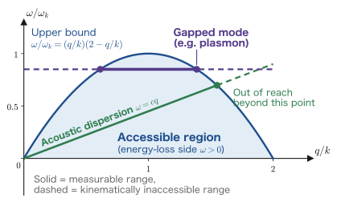
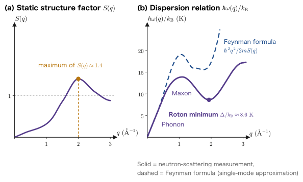

Chapter 12Inelastic Scattering and the Dynamic Structure Factor
From Chapter 7 through Chapter 11 we have done nothing but calculate. We derived the Kubo formula, rewrote it in the Lehmann representation, computed the Lindhard function, and obtained the dispersion of the plasmon. Yet one decisive piece is missing from the discussion so far. It is the question: can it really be measured?
The quantity $\mathrm{Im}\,\chi^R_{\rho\rho}(\qq,\omega)$ is, on paper, no more than “the imaginary part of the density–density correlation function.” What a laboratory has is a source, a sample, and a detector. Where do the two—the quantity on paper and the laboratory—connect? This chapter shows how.
To give the answer first: shoot particles into the sample and measure the changes in momentum and energy of the scattered particles. If the momentum has decreased by $\hbar\qq$ and the energy by $\hbar\omega$, that amount has been transferred to the sample. Computing the probability of such scattering with the Born approximation and Fermi's golden rule, we find an expression of the form
$$ \frac{\dd^2\sigma}{\dd\Omega\,\dd\omega} = N\left(\frac{\dd\sigma}{\dd\Omega}\right)_{\text{single-particle}}\!\!\!S(\qq,\omega) $$where the prefactor is “scattering between the probe and a single target, independent of what the sample contains,” and the factor $S(\qq,\omega)$ that follows contains everything about the sample. This $S(\qq,\omega)$ is called the dynamic structure factor, and it is nothing other than the Fourier transform of the space–time correlation of density fluctuations. And the fluctuation–dissipation theorem gives
$$ S(\qq,\omega) = -\frac{\hbar}{\pi n}\,\frac{\mathrm{Im}\,\chi^R_{\rho\rho}(\qq,\omega)}{1-\ee^{-\beta\hbar\omega}} $$A scattering experiment directly measures $\mathrm{Im}\,\chi$. This is the conclusion of this chapter, and it is the point where the theory built up in Parts III and IV connects with experiment. That phonon dispersions can be measured by neutron scattering, and that plasmon peaks can be seen in electron energy-loss spectroscopy (EELS), all come down to this single equation.
- The kinematics of scattering experiments: $\qq=\kk-\kk'$, $\hbar\omega=E_i-E_f$, and $q=2k\sin(\theta/2)$ for elastic scattering; and the fact that choosing the incident energy already determines where in the $(q,\omega)$ plane we can scan
- Deriving the double-differential cross section, with every step written out, from Fermi's golden rule and the Born approximation; the mechanism by which $\hat\rho_\qq^\dagger$ emerges naturally from the matrix element
- A proof that the two expressions for the dynamic structure factor $S(\qq,\omega)$ (a sum over matrix elements, and the Fourier transform of a time correlation) are identical, and the van Hove correlation function $G(\bm r,t)$—the precise meaning of “$S$ is the Fourier transform of the space–time correlation of density fluctuations”
- The relation between $S$ and $\mathrm{Im}\,\chi^R$ (the practical form of the fluctuation–dissipation theorem). Checking the sign against the result of Chapter 8 and confirming that $S\ge0$ is guaranteed
- Detailed balance $S(\qq,-\omega)=\ee^{-\beta\hbar\omega}S(\qq,\omega)$ and its experimental meaning
- That for charged particles it is not $S$ but the loss function $-\mathrm{Im}\,\epsilon^{-1}$ that is measured; why a plasmon peak stands up in EELS (the connection with Chapter 11)
- Checks with sum rules: deriving $\int\dd\omega\,S=S(\qq)$ (the static structure factor) and $\int\dd\omega\,\omega S=\hbar q^2/2m$ (the $f$-sum rule) from the double commutator
- The single-mode approximation $\hbar\omega(q)=\hbar^2q^2/2mS(q)$ (Feynman's formula) and the roton minimum of liquid $^4$He
- Neutrons, X-rays, electron beams, Raman scattering, and angle-resolved photoemission spectroscopy (ARPES)—what each probe can and cannot measure
12.1 Kinematics of Scattering Experiments
12.1.1 What is done in the laboratory?
However large the apparatus, the procedure of a scattering experiment boils down, in principle, to the following three lines.
The three steps of a scattering experiment
- Incidence: A probe particle (a neutron, photon, or electron) with a sharply defined momentum $\hbar\kk$ and energy $E_i$ is fired at the sample.
- Scattering: The probe interacts with the sample and emerges with momentum $\hbar\kk'$ and energy $E_f$.
- Detection: We specify the direction (solid angle $\dd\Omega$) and the energy (width $\dd E_f$) and count how many arrive per unit time.
The measured quantity is the double-differential cross section $\dfrac{\dd^2\sigma}{\dd\Omega\,\dd\omega}$, that is, “how likely scattering is to occur when both the direction and the energy transfer are specified.” It is “double” because we differentiate with respect to two quantities, $\dd\Omega$ and $\dd\omega$.
What is decisively important here is the conservation law that everything the probe loses is passed on to the sample.
We call $\qq$ the scattering vector or momentum transfer, and $\omega$ the energy transfer (frequency transfer). If $\omega>0$, the probe has lost energy (energy loss); if $\omega<0$, the probe has received energy (energy gain).
Physical Meaning: The experimenter can freely choose $(\qq,\omega)$ and “kick” the sample
When we considered the density response in Chapter 9, we assumed an external potential $\phi_{\text{ext}}\propto\ee^{\ii(\qq\cdot\xx-\omega t)}$, a “ripple of wave vector $\qq$ and frequency $\omega$.” That was not a hypothetical external field introduced for computational convenience. A scattering experiment applies precisely that wave to the sample.
The probe particle enters as a plane wave $\ee^{\ii\kk\cdot\xx}$ and leaves as $\ee^{\ii\kk'\cdot\xx}$. As we shall see in Section 12.2, the perturbation it exerts on the sample along the way has the spatial dependence $\ee^{\ii(\kk-\kk')\cdot\xx}=\ee^{\ii\qq\cdot\xx}$, and, by energy conservation, the time dependence $\ee^{-\ii\omega t}$. Changing the scattering angle changes $\qq$; changing the setting of the energy analyzer changes $\omega$. This is the content of the statement that “a scattering experiment is a direct realization of linear response theory”; it is the version of Chapter 1's “kick, and listen to the reply” in which both $\qq$ and $\omega$ can be specified.
12.1.2 Scattering angle and momentum transfer
Let us write the magnitude of $\qq=\kk-\kk'$ in terms of the scattering angle $\theta$ (the angle between $\kk$ and $\kk'$). All we need to do is expand the vector inner product straightforwardly.
Derivation 1: $q^2=k^2+k'^2-2kk'\cos\theta$ and $q=2k\sin(\theta/2)$
Step 1: Squaring.
$$ q^2 = \abs{\kk-\kk'}^2 = (\kk-\kk')\cdot(\kk-\kk') = k^2 - 2\,\kk\cdot\kk' + k'^2 $$Writing the inner product as $\kk\cdot\kk'=kk'\cos\theta$, we obtain
This is nothing but the law of cosines for a triangle. Indeed, $\kk$, $\kk'$, and $\qq$ form a closed triangle, as in Figure 12.1(b).
Step 2: The case of elastic scattering. If $\omega=0$, that is, $E_i=E_f$, then $k'=k$, so
$$ q^2 = 2k^2(1-\cos\theta) $$Using the half-angle formula $1-\cos\theta = 2\sin^2(\theta/2)$, we get $q^2=4k^2\sin^2(\theta/2)$, that is,
∎ In forward scattering, $\theta=0$, we have $q=0$, and in backscattering, $\theta=\pi$, $q=2k$ is the maximum. In elastic scattering, however hard we try, we cannot transfer a momentum larger than twice the incident wave number. That the Bragg condition $2d\sin\theta_B=\lambda$ is a rewriting of this equation can be checked by substituting $q=2\pi/d$, $k=2\pi/\lambda$, and $\theta=2\theta_B$ (Exercise 12.1).
12.1.3 Where in the $(q,\omega)$ plane can we scan?
This is the heart of experimental planning. Once the incident wave number $k$ is fixed, the region that can be reached in the $(q,\omega)$ plane is fixed as well. Let us find it. Let $M$ be the mass of the probe, and take $E=\hbar^2k^2/2M$, treating the probe nonrelativistically.
Derivation 2: Boundary of the accessible region
Step 1: Writing energy conservation in terms of wave numbers.
$$ \hbar\omega = E_i - E_f = \frac{\hbar^2}{2M}\left(k^2-k'^2\right) \qquad\Longrightarrow\qquad k'^2 = k^2 - \frac{2M\omega}{\hbar} $$The moment we specify the energy transfer $\omega$, the magnitude $k'$ of the scattered wave number is determined. All that remains free to choose is the direction (the scattering angle $\theta$).
Step 2: The range of $q$ as the direction is varied. In Eq. \eqref{eq:12-qtheta}, as $\cos\theta$ is moved from $+1$ (forward, $\theta=0$) to $-1$ (backward, $\theta=\pi$), we obtain
$$ q^2_{\min}=k^2+k'^2-2kk'=(k-k')^2, \qquad q^2_{\max}=k^2+k'^2+2kk'=(k+k')^2 $$that is, $\abs{k-k'}\le q\le k+k'$. This is the accessible region.
Step 3: Nondimensionalizing to obtain a clean form. Let $x\equiv q/k$, $u\equiv k'/k\;(\ge0)$, and $\omega_k\equiv\hbar k^2/2M$ (the frequency corresponding to the incident energy, $\hbar\omega_k=E_i$). Step 1 becomes
$$ u^2 = 1 - \frac{\omega}{\omega_k} \qquad\Longleftrightarrow\qquad \frac{\omega}{\omega_k} = 1-u^2 $$and Step 2 is equivalent to $\abs{1-u}\le x\le 1+u$, that is, to “$u\ge\abs{1-x}$ and $u\le 1+x$.”
Step 4: Eliminating $u$. Since $\omega/\omega_k=1-u^2$ is a decreasing function of $u$ on $u\ge0$, the condition $u\ge\abs{1-x}$ is equivalent to
$$ \frac{\omega}{\omega_k}\;\le\;1-(1-x)^2 = 2x-x^2 = x(2-x) $$and $u\le1+x$ is equivalent to
$$ \frac{\omega}{\omega_k}\;\ge\;1-(1+x)^2 = -2x-x^2 = -x(2+x) $$To summarize,
∎ Both the upper and the lower bounds are quadratic functions of $q$ (parabolas). In experiments the upper bound is the one that matters more.
Physical Meaning: What the upper parabola tells us
The upper bound $\omega/\omega_k = x(2-x)$ takes its maximum value $1$ at $x=q/k=1$ and vanishes at $x=0$ and $x=2$. Three things can be read off from it.
- The energy transfer cannot exceed the incident energy. $\omega\le\omega_k$, that is, $\hbar\omega\le E_i$. This is obvious, but extremely important. If we use $10\ \mathrm{eV}$ electrons to measure a $15\ \mathrm{eV}$ plasmon, we see nothing at all.
- As $q\to0$, only $\omega\to0$ can be measured. The upper bound rises in proportion to $q$, as $\omega/\omega_k\simeq 2q/k$. Restoring the dimensions (substituting $\omega_k=\hbar k^2/2M$), we get $\omega\le 2q\omega_k/k=q\cdot(\hbar k/M)=qv$ (where $v=\hbar k/M$ is the velocity of the probe). In other words, $\omega\le qv$. This is a restriction that matches the intuition that “an excitation that travels faster than the probe cannot be created.”
- The region $q>2k$ can be reached only on the energy-gain side. Unless the probe receives energy from the sample and is accelerated, it cannot transfer a momentum exceeding twice the incident wave number.
Therefore choosing a probe means nothing other than choosing $M$ and $E_i$ so that this parabola can be laid over the dispersion curve of the excitation we want to measure. It is in exactly this sense that Section 12.7 says that neutrons are ideal for measuring phonons in solids.

Example 12.1: Why are thermal neutrons suited to measuring phonons?
For thermal neutrons of wavelength $\lambda=1.8\ \text{Å}$ ($M=1.675\times10^{-27}\ \mathrm{kg}$), find $k$ and $E_i$, and evaluate the upper limit of the energy transfer that can be measured at $q\simeq1\ \text{Å}^{-1}$.
Solution. $k=2\pi/\lambda=3.49\times10^{10}\ \mathrm{m^{-1}}=3.49\ \text{Å}^{-1}$. The energy is
$$ E_i=\frac{\hbar^2k^2}{2M} =\frac{1.1122\times10^{-68}\times1.218\times10^{21}}{3.350\times10^{-27}} =4.04\times10^{-21}\ \mathrm{J}=25.2\ \mathrm{meV} $$Since $x=q/k=0.287$, the upper limit is $\omega/\omega_k=x(2-x)=0.491$, that is, $\hbar\omega_{\max}=0.491\times25.2=12.4\ \mathrm{meV}$.
∎ This is the key point. The energy of acoustic phonons in solids is $1$–$30\ \mathrm{meV}$, and the size of the Brillouin zone is $1$–$2\ \text{Å}^{-1}$. Thermal neutrons are an exact match for both of them. Hardly any other probe matches the orders of magnitude of both $q$ and $\omega$ at the same time. This agreement is the reason people carry out neutron scattering even at the cost of building huge facilities such as nuclear reactors and spallation neutron sources. For comparison, visible light ($\lambda=500\ \mathrm{nm}$) has only $k=1.26\times10^{-3}\ \text{Å}^{-1}$: although its energy is as large as $2.5\ \mathrm{eV}$, its momentum falls hopelessly short.
12.2 From the Born Approximation and the Golden Rule to the Double-Differential Cross Section
The main calculation of this chapter starts here. We write out “the probability that the probe is scattered while handing over $(\qq,\omega)$” from Fermi's golden rule all the way to the end. We skip no intermediate steps.
12.2.1 Setting the stage
The Hamiltonian of the system
Consider a system consisting of a probe particle (mass $M$, position $\xx$) and $N$ target particles (mass $m$, positions $\xx_1,\dots,\xx_N$).
$$ \begin{equation} \Ham_{\text{tot}} = \underbrace{\frac{\hat{\pp}^2}{2M}}_{\text{probe}} \;+\;\underbrace{\Ham_0}_{\text{sample}} \;+\;\underbrace{\sum_{i=1}^{N}U(\xx-\xx_i)}_{\displaystyle \Ham_{\text{int}}} \label{eq:12-Htotal} \end{equation} $$$\Ham_0$ is the (true) Hamiltonian of the sample, including all the interactions, with eigenstates $\ket{n}$ and eigenenergies $E_n$. We denote the ground state by $\ket{0}$ and write $\hbar\omega_{n0}\equiv E_n-E_0$ (the same notation as in Chapter 8).
$U(\xx-\xx_i)$ is the interaction between the probe and a single target particle. We assume it is weak and treat it to first order in perturbation theory (= the Born approximation).
Why can we say that “first-order perturbation is enough”?
The Born approximation is justified when the probe kicks the sample just once and leaves. For neutrons and X-rays this is a good approximation (the interaction is weak, and it is more usual for the probe simply to pass straight through the sample).
For electron beams this is not so. Electrons couple strongly to the electrons of the sample through the Coulomb force, and if the sample is thick they are scattered many times (multiple scattering). This is why the sample must be made thin in TEM-EELS ($50$–$100\ \mathrm{nm}$ or less), and the multiple scattering that remains even then is removed numerically by methods such as the Fourier-log method. That “the theory is written in the Born approximation” translates directly into the experimental requirement “make the sample thin.”
We take the initial and final states to be products of a plane wave of the probe and an eigenstate of the sample. The probe plane wave is normalized in a box of volume $V$:
$$ \begin{equation} \ket{i}=\ket{\kk}\otimes\ket{0}, \qquad \ket{f}=\ket{\kk'}\otimes\ket{n}, \qquad \braket{\xx|\kk}=\frac{1}{\sqrt{V}}\,\ee^{\ii\kk\cdot\xx} \label{eq:12-states} \end{equation} $$12.2.2 Computing the matrix element — where $\hat\rho_\qq^\dagger$ appears
Derivation 3: Computing $\bra{f}\Ham_{\text{int}}\ket{i}$ (every step)
Step 1: Integrating over the probe coordinate. We leave the state of the sample untouched for now.
$$ \bra{\kk'}\Ham_{\text{int}}\ket{\kk} = \int_V\dd^3x\;\frac{\ee^{-\ii\kk'\cdot\xx}}{\sqrt V}\; \left[\sum_{i=1}^{N}U(\xx-\xx_i)\right]\; \frac{\ee^{\ii\kk\cdot\xx}}{\sqrt V} = \frac{1}{V}\sum_{i=1}^{N}\int\dd^3x\;\ee^{\ii(\kk-\kk')\cdot\xx}\,U(\xx-\xx_i) $$We combined the two exponentials into $\ee^{\ii\qq\cdot\xx}$ (with $\qq=\kk-\kk'$).
Step 2: Change of variables $\bm y=\xx-\xx_i$. Since $\xx=\bm y+\xx_i$ and $\dd^3x=\dd^3y$,
$$ \int\dd^3x\;\ee^{\ii\qq\cdot\xx}U(\xx-\xx_i) = \int\dd^3y\;\ee^{\ii\qq\cdot(\bm y+\xx_i)}U(\bm y) = \ee^{\ii\qq\cdot\xx_i}\int\dd^3y\;\ee^{\ii\qq\cdot\bm y}U(\bm y) $$This is the crux of the whole calculation. The position $\xx_i$ of the target particle has separated completely from the details of the interaction, as the factor $\ee^{\ii\qq\cdot\xx_i}$. The remaining integral
$$ \begin{equation} U(q) \equiv \int\dd^3y\;\ee^{-\ii\qq\cdot\bm y}\,U(\bm y) \label{eq:12-Uq} \end{equation} $$is the Fourier transform of the interaction and does not depend at all on the contents of the sample. If $U(\bm y)$ is spherically symmetric ($U(\bm y)=U(y)$), then $\int\dd^3y\,\ee^{+\ii\qq\cdot\bm y}U(y)=U(q)$, and we need not worry about the sign of the exponent. From now on we assume this.
Step 3: Recognizing what $\sum_i\ee^{\ii\qq\cdot\xx_i}$ really is. The density operator in first quantization is
$$ \hat\rho(\xx) = \sum_{i=1}^{N}\delta(\xx-\xx_i) $$Substituting this into the convention of Chapter 9, $\hat\rho_\qq=\int\dd^3x\,\ee^{-\ii\qq\cdot\xx}\hat\rho(\xx)$, the delta function eats the integral and we obtain
$$ \hat\rho_\qq = \int\dd^3x\;\ee^{-\ii\qq\cdot\xx}\sum_i\delta(\xx-\xx_i) = \sum_{i=1}^{N}\ee^{-\ii\qq\cdot\xx_i} $$Therefore the sum we were looking for is
(As we checked in Chapter 9, $\hat\rho_\qq^\dagger=\hat\rho_{-\qq}$.)
Step 4: Putting it together. Sandwiching between the states of the sample as well, we have
∎ The details of the interaction ($U(q)$) and the contents of the sample ($\bra{n}\hat\rho_\qq^\dagger\ket{0}$) have separated cleanly into a product. One could say that this is the whole of this chapter. The calculations that follow are merely the work of translating this equation into “how many particles arrive at the detector per unit time.”
Physical Meaning: Why $\hat\rho_\qq^\dagger$ inevitably appears
As we checked in Chapter 9, $\hat\rho_\qq^\dagger=\hat\rho_{-\qq}$ is the operator that gives the sample momentum $+\hbar\qq$. Indeed, multiplying a plane wave $\ee^{\ii\pp\cdot\xx/\hbar}$ by $\ee^{\ii\qq\cdot\xx}$ gives $\ee^{\ii(\pp+\hbar\qq)\cdot\xx/\hbar}$, so the momentum increases by $\hbar\qq$. The probe loses $\hbar\qq$, and the sample gains $\hbar\qq$. The operator that represents this act of “gaining” is $\hat\rho_\qq^\dagger$. It did not come out by accident; as a consequence of momentum conservation it can only come out this way.
Furthermore, as we saw in Chapter 9, Section 9.1.3, when $\hat\rho_\qq^\dagger$ acts on the Fermi sphere, it creates exactly one particle–hole pair. “The probe kicks the electron gas” means “one electron is kicked up from below the Fermi surface to above it.” The plasmon appears as a superposition of such processes.
12.2.3 From Fermi's golden rule to the cross section
What follows is the standard procedure of scattering theory. However, unless we handle the “counting of the final states” and the “incident flux” carefully, $V$ will fail to cancel or the coefficients will be off. We write it out line by line.
Fermi's golden rule (review)
The transition probability per unit time from the initial state $\ket{i}$ to the final state $\ket{f}$ due to the perturbation $\Ham_{\text{int}}$ is
$$ \begin{equation} w_{i\to f} = \frac{2\pi}{\hbar}\abs{\bra{f}\Ham_{\text{int}}\ket{i}}^2\,\delta(E_i^{\text{tot}}-E_f^{\text{tot}}) \label{eq:12-golden} \end{equation} $$The delta function expresses energy conservation for the whole system (probe plus sample). In the case of this chapter, we can write
$$ E_i^{\text{tot}}-E_f^{\text{tot}} =\left(\frac{\hbar^2k^2}{2M}+E_0\right)-\left(\frac{\hbar^2k'^2}{2M}+E_n\right) = \hbar\omega - \hbar\omega_{n0} $$(where $\hbar\omega\equiv\frac{\hbar^2}{2M}(k^2-k'^2)$ and $\hbar\omega_{n0}=E_n-E_0$). The delta function can be rewritten as $\delta(\hbar\omega-\hbar\omega_{n0})=\frac{1}{\hbar}\delta(\omega-\omega_{n0})$.
How to read it: Scattering occurs only when the energy lost by the probe coincides exactly with the excitation energy of the sample. The contents of the delta function are the source of every “resonance” in this chapter.
Derivation 4: The double-differential cross section (checking even that $V$ drops out)
Step 1: Writing down the definition of the cross section. The cross section is the “number of scatterings per unit time” divided by the “number of incident particles per unit time and per unit area (the incident flux $j$)”:
$$ \dd\sigma = \frac{1}{j}\times\left(\text{number of scatterings per unit time into that direction and that energy}\right) $$Since one particle moves in a box of volume $V$ with speed $v=\hbar k/M$, the number density is $1/V$, and the flux is
$$ j = \frac{v}{V} = \frac{\hbar k}{MV} $$Step 2: Counting the final states. In a box with periodic boundary conditions there is one state per volume $(2\pi)^3/V$ of wave-vector space. Therefore the number of states in which $\kk'$ lies in the infinitesimal volume $\dd^3k'$ is
$$ \dd\mathcal{N} = \frac{V}{(2\pi)^3}\,\dd^3k' = \frac{V}{(2\pi)^3}\,k'^2\,\dd k'\,\dd\Omega $$(We used polar coordinates, $\dd^3k'=k'^2\dd k'\dd\Omega$.)
Step 3: Multiplying everything together. For the final states $\ket{n}$ of the sample we sum over all of them without distinction (the detector cannot tell which excited state the sample has ended up in; all it distinguishes is the energy transfer):
$$ \dd\sigma = \frac{MV}{\hbar k}\cdot\frac{V}{(2\pi)^3}k'^2\dd k'\,\dd\Omega \cdot\frac{2\pi}{\hbar}\cdot\frac{\abs{U(q)}^2}{V^2} \sum_n\abs{\bra{n}\hat\rho_\qq^\dagger\ket{0}}^2\,\frac{1}{\hbar}\delta(\omega-\omega_{n0}) $$Now we count the powers of $V$. $V^{+1}$ (from the inverse of the flux) $\times\,V^{+1}$ (from the density of states) $\times\,V^{-2}$ (from the square of the matrix element) $=V^0$. The volume has cancelled cleanly. Since this is a physical quantity, it would be wrong if it did not cancel, but confirming that it does is useful as a check.
Step 4: Changing $\dd k'$ to $\dd\omega$. The detector specifies the energy (= the energy transfer $\omega$), so we replace the variable $k'$ by $\omega$. From $E_f=\hbar^2k'^2/2M$,
$$ \dd E_f = \frac{\hbar^2 k'}{M}\dd k' \qquad\Longrightarrow\qquad k'^2\,\dd k' = k'^2\cdot\frac{M}{\hbar^2k'}\dd E_f = \frac{Mk'}{\hbar^2}\,\dd E_f $$Furthermore, since $\hbar\omega=E_i-E_f$ and $E_i$ is fixed, $\abs{\dd E_f}=\hbar\,\abs{\dd\omega}$. Hence
$$ k'^2\,\dd k' = \frac{Mk'}{\hbar^2}\cdot\hbar\,\dd\omega = \frac{Mk'}{\hbar}\,\dd\omega $$Step 5: Tidying up. Substituting and dividing by $\dd\Omega\,\dd\omega$, we obtain
$$ \frac{\dd^2\sigma}{\dd\Omega\,\dd\omega} = \frac{M}{\hbar k}\cdot\frac{1}{(2\pi)^3}\cdot\frac{Mk'}{\hbar}\cdot\frac{2\pi}{\hbar}\cdot\frac{1}{\hbar} \cdot\abs{U(q)}^2\sum_n\abs{\bra{n}\hat\rho_\qq^\dagger\ket{0}}^2\delta(\omega-\omega_{n0}) $$Extracting just the numerical coefficients,
$$ \frac{M}{\hbar k}\cdot\frac{Mk'}{\hbar}\cdot\frac{2\pi}{8\pi^3}\cdot\frac{1}{\hbar^2} = \frac{k'}{k}\cdot\frac{M^2}{4\pi^2\hbar^4} = \frac{k'}{k}\left(\frac{M}{2\pi\hbar^2}\right)^2 $$Therefore
∎ This is the equation we were after. All that remains is to read the right-hand side as two separate parts: the “cross section of a single particle” and the “information about the sample.”
The prefactor is the square of the Born scattering amplitude
Recall that the Born scattering amplitude is $f_{\text{Born}}(\qq)=-\frac{M}{2\pi\hbar^2}U(q)$ and that the elastic differential cross section is $\dd\sigma/\dd\Omega=\abs{f_{\text{Born}}}^2$. The prefactor of Eq. \eqref{eq:12-ddcs-raw} is precisely the differential cross section for the probe colliding with a single target particle (multiplied by the flux correction $k'/k$ for inelastic scattering).
Let us also check the dimensions. $U(q)$ has dimensions [energy]$\times$[volume], and $M/\hbar^2$ has dimensions [energy$\times$length$^2$]$^{-1}$, so the square of the product has dimensions [length$^2$] = area. Since $\delta(\omega-\omega_{n0})$ has the dimension of [time], the left-hand side is [area]$\times$[time], which is consistent with having divided by $\dd\Omega$ and $\dd\omega$.
12.2.4 Summarizing with the dynamic structure factor
We normalize the last sum in Eq. \eqref{eq:12-ddcs-raw} by the number of target particles $N$ and give it a name.
Definition: Dynamic structure factor ($T=0$)
Using this, Eq. \eqref{eq:12-ddcs-raw} can be written as follows.
This is the main theorem of this chapter.
Physical Meaning: Why this separation is so welcome
The right-hand side of Eq. \eqref{eq:12-master} is a product of two factors of completely different character.
- $\left(\dfrac{\dd\sigma}{\dd\Omega}\right)_{\text{single-particle}}$: What happens between the probe and a single target. For neutrons it is the nuclear force, for X-rays Thomson scattering, for electrons the Coulomb force. It does not depend at all on whether the sample is a solid or a liquid, a metal or an insulator.
- $S(\qq,\omega)$: What is inside the sample. How the target particles are arranged and how they fluctuate. It does not depend at all on what the probe is.
That is exactly why the same $S(\qq,\omega)$ can be measured with different probes and the results compared. The $S(\qq,\omega)$ of liquid $^4$He measured with neutrons and the one measured with X-rays must be the same function. Note, however, that if the thing the probe couples to is different (for neutrons, the nuclear density and magnetic moment; for X-rays, the electron density), the $S$ being measured is a different one. What we are saying here is that, as long as the probes couple to the same operator, the same function appears once the probe-specific prefactor (including form factors and polarization factors) is divided out. Conversely, once $S$ can be measured, it can be compared directly with theory as a property of the sample itself. The $\mathrm{Im}\,\chi$ output by a first-principles calculation and the counts of a detector in the laboratory are linked by this single equation.
Normalization Convention: Watch out — whether or not $N$ is included
Because we attached $1/N$ in Eq. \eqref{eq:12-S-def}, an $N$ appeared on the right-hand side of Eq. \eqref{eq:12-master}. Whether this $1/N$ is present differs from textbook to textbook, so always check it when comparing numbers with other books. This book follows the Fetter–Walecka convention and includes $1/N$ (other books may use a different convention). The advantages of this convention are that $S(\qq,\omega)$ becomes intensive (if the sample is doubled, the intensity doubles, but that is carried by the preceding $N$) and that the sum rules of Section 12.6 take the clean forms $\int\dd\omega\,S=S(\qq)$ and $\int\dd\omega\,\omega S=\hbar q^2/2m$, in which no $N$ appears.
The physics is the same. When someone says “the absolute value of $S$ is orders of magnitude different from the literature,” first suspect this normalization, and whether a factor $1/2\pi$ is included.
Example 12.2: What happens to the prefactor for neutrons, X-rays, and electrons?
(a) Neutrons. The range of the nuclear force ($\sim1\ \mathrm{fm}$) is far shorter than the neutron wavelength ($\sim1\ \text{Å}=10^5\ \mathrm{fm}$), so the interaction between a neutron and a nucleus may be treated as a point interaction. We therefore use the Fermi pseudopotential
$$ U(\bm y) = \frac{2\pi\hbar^2 b}{M}\,\delta(\bm y) $$(where $b$ is the scattering length, a constant of each nucleus with the dimension of length). Its Fourier transform is $U(q)=2\pi\hbar^2b/M$, which is independent of $q$. Therefore
$$ \left(\frac{\dd\sigma}{\dd\Omega}\right)_{\text{single-particle}} =\frac{k'}{k}\left(\frac{M}{2\pi\hbar^2}\right)^2\left(\frac{2\pi\hbar^2b}{M}\right)^2 =\frac{k'}{k}\,b^2 $$This is the greatest advantage of neutron scattering. Since the prefactor does not depend on $q$, the measured intensity can be read directly as the form of $S(\qq,\omega)$. Moreover, $b$ is tabulated for each nuclide, so an absolute-scale measurement is possible. Typically $b\sim10^{-14}\ \mathrm{m}=10\ \mathrm{fm}$, and $b^2\sim1\ \mathrm{barn}=10^{-28}\ \mathrm{m^2}$.
(b) X-rays. Photons couple to the electron density through Thomson scattering, and the prefactor, written with the classical electron radius $r_e=e^2/mc^2=2.82\times10^{-15}\ \mathrm{m}$, becomes $r_e^2(\bm e\cdot\bm e')^2$ (with the polarization factor). The only $q$ dependence is through the polarization factor, and it is gentle. Hence X-rays too measure $S(\qq,\omega)$ almost directly (though it is the $S$ of the electron density).
(c) Electrons. The interaction between the probe electron and the sample electrons is the Coulomb repulsion $U(y)=e^2/y$ (Gaussian units), so $U(q)=v(q)=4\pi e^2/q^2$, as computed in Chapter 9. The prefactor is
$$ \left(\frac{\dd\sigma}{\dd\Omega}\right)_{\text{single-particle}} =\frac{k'}{k}\left(\frac{M}{2\pi\hbar^2}\right)^2\left(\frac{4\pi e^2}{q^2}\right)^2 =\frac{k'}{k}\left(\frac{2Me^2}{\hbar^2q^2}\right)^{\!2} $$This is the Rutherford scattering cross section. It has the strong $q$ dependence $q^{-4}$. ∎ This $q^{-4}$ is precisely the reason that electron-beam scattering is overwhelmingly concentrated in the forward direction, and, as we will see in Section 12.5, it also leads to the statement that “the electron beam measures not $S$ but the loss function.”
12.3 The Dynamic Structure Factor $S(\qq,\omega)$
We defined $S$ in Eq. \eqref{eq:12-S-def}, but this form requires that we know “all the eigenstates $\ket{n}$ of the sample.” It is impossible to know all the eigenstates of $10^{23}$ electrons. So we use exactly the same trick as in Chapter 8—inserting a complete set of states to rewrite the expression in terms of a time correlation function.
12.3.1 Expression in terms of the time correlation function
Theorem 12.1 (Two expressions for the dynamic structure factor)
Here $\hat\rho_\qq(t)=\ee^{\ii\Ham_0t/\hbar}\hat\rho_\qq\ee^{-\ii\Ham_0t/\hbar}$ is the density operator in the Heisenberg picture, and $\braket{\cdots}$ is the ground-state expectation value $\bra{0}\cdots\ket{0}$ for $T=0$ and the thermal average at finite temperature.
Derivation 5: Proof that the two expressions are the same ($T=0$)
Step 1: Inserting a complete set of states into the correlation function on the right-hand side. Insert $\sum_n\ket{n}\bra{n}=1$ between $\hat\rho_\qq(t)$ and $\hat\rho_\qq^\dagger(0)$:
$$ \bra{0}\hat\rho_\qq(t)\,\hat\rho_\qq^\dagger(0)\ket{0} = \sum_n \bra{0}\hat\rho_\qq(t)\ket{n}\bra{n}\hat\rho_\qq^\dagger\ket{0} $$Step 2: Unwinding the time dependence. Using $\Ham_0\ket{0}=E_0\ket{0}$ and $\Ham_0\ket{n}=E_n\ket{n}$, we get
$$ \bra{0}\hat\rho_\qq(t)\ket{n} = \bra{0}\ee^{\ii\Ham_0t/\hbar}\hat\rho_\qq\ee^{-\ii\Ham_0t/\hbar}\ket{n} = \ee^{\ii E_0t/\hbar}\,\ee^{-\ii E_nt/\hbar}\,\bra{0}\hat\rho_\qq\ket{n} = \ee^{-\ii\omega_{n0}t}\,\bra{0}\hat\rho_\qq\ket{n} $$The exponential operators have simply been replaced by eigenvalues. We used $\hbar\omega_{n0}=E_n-E_0$.
Step 3: Putting the matrix element into squared form. Since $\hat\rho_\qq^\dagger$ is the Hermitian conjugate of $\hat\rho_\qq$,
$$ \bra{0}\hat\rho_\qq\ket{n} = \left(\bra{n}\hat\rho_\qq^\dagger\ket{0}\right)^{*} $$Therefore
$$ \bra{0}\hat\rho_\qq(t)\ket{n}\bra{n}\hat\rho_\qq^\dagger\ket{0} = \abs{\bra{n}\hat\rho_\qq^\dagger\ket{0}}^2\,\ee^{-\ii\omega_{n0}t} $$It has become a squared absolute value (a nonnegative real number). This is what later guarantees $S\ge0$.
Step 4: Carrying out the time integral. Substituting the results so far into the right-hand side, we obtain
$$ \frac{1}{2\pi N}\int_{-\infty}^{\infty}\dd t\;\ee^{\ii\omega t}\sum_n\abs{\bra{n}\hat\rho_\qq^\dagger\ket{0}}^2\ee^{-\ii\omega_{n0}t} = \frac{1}{2\pi N}\sum_n\abs{\bra{n}\hat\rho_\qq^\dagger\ket{0}}^2 \int_{-\infty}^{\infty}\dd t\;\ee^{\ii(\omega-\omega_{n0})t} $$Unlike the case of $\chi^R$ in Chapter 8, there is no $\theta(t)$ here, so the range of integration is all times and no convergence factor is needed. Using the integral representation of the delta function
$$ \int_{-\infty}^{\infty}\dd t\;\ee^{\ii Xt} = 2\pi\,\delta(X) $$we see that the $2\pi$ exactly cancels the prefactor $1/2\pi$, giving
$$ = \frac{1}{N}\sum_n\abs{\bra{n}\hat\rho_\qq^\dagger\ket{0}}^2\delta(\omega-\omega_{n0}) $$∎ This agrees with the definition, Eq. \eqref{eq:12-S-def}, of the left-hand side.
Why is it important to have two expressions?
They are two faces of the same function, and the way to use them is as follows.
- The sum-of-matrix-elements form is suited to physical interpretation. $\abs{\bra{n}\hat\rho_\qq^\dagger\ket{0}}^2$ is “the probability that, when we kick the ground state with the density operator, it ends up in the state $\ket{n}$,” and $\delta(\omega-\omega_{n0})$ is the instruction “count it only when that energy is $\hbar\omega$.” That is, $S(\qq,\omega)$ expresses how easily an excitation of momentum $\hbar\qq$ and energy $\hbar\omega$ can be created. A peak appears in the spectrum because there is an excitation mode there.
- The time-correlation form is suited to computation. Even without knowing a single eigenstate, it suffices to solve the equation of motion of $\hat\rho_\qq(t)$. The Matsubara Green's function of Chapter 13, and the method of computing $\braket{\rho_\qq(t)\rho_{-\qq}(0)}$ numerically by classical molecular dynamics, are all based on this form.
Compared with the spectral function of Chapter 8, the dynamic structure factor is merely the special case $S(\qq,\omega)=\frac{1}{N}S_{AB}(\omega)$ ($\hat A=\hat\rho_\qq$, $\hat B=\hat\rho_{-\qq}$). This is why the general theory of Chapter 8 can be used as it is.
Where the dagger goes — $\braket{\hat\rho_\qq(t)\hat\rho_\qq^\dagger(0)}$ or $\braket{\hat\rho_\qq^\dagger(t)\hat\rho_\qq(0)}$?
Some textbooks write the dynamic structure factor as
$$ S(\qq,\omega) = \frac{1}{2\pi N}\int\dd t\;\ee^{\ii\omega t}\braket{\hat\rho_\qq^\dagger(t)\,\hat\rho_\qq(0)} $$with the dagger on the first factor. This is not the same as, but equal to, Eq. \eqref{eq:12-S-two-forms}. Carrying out the same calculation as in Derivation 5, this form gives
$$ \frac{1}{N}\sum_n\abs{\bra{n}\hat\rho_\qq\ket{0}}^2\delta(\omega-\omega_{n0}) = \frac{1}{N}\sum_n\abs{\bra{n}\hat\rho_{-\qq}^\dagger\ket{0}}^2\delta(\omega-\omega_{n0}) = S(-\qq,\omega) $$In other words, only $\qq\to-\qq$ has been interchanged. For isotropic systems (liquids, gases, the uniform electron gas) and for crystals with inversion symmetry, $S(-\qq,\omega)=S(\qq,\omega)$, so the two coincide exactly. For the uniform electron gas treated in this book there is no need to distinguish them.
Note, however, that what appears in the cross section of a scattering experiment is $\abs{\bra{n}\hat\rho_\qq^\dagger\ket{0}}^2$ (see Eq. \eqref{eq:12-matrixelement}). This corresponds to “the sample receives momentum $+\hbar\qq$,” which is physically natural. The distinction matters when we treat a system that lacks spatial inversion symmetry and in which, moreover, even time-reversal symmetry is broken (such as a magnet without an inversion center). Conversely, as long as the system is time-reversal symmetric, $S(-\qq,\omega)=S(\qq,\omega)$ holds even without spatial inversion.
12.3.2 Space–time correlation of density fluctuations — the van Hove correlation function
One often hears the phrase “$S$ is the Fourier transform of the space–time correlation of density fluctuations.” Let us confirm its precise meaning.
Derivation 6: The van Hove correlation function $G(\bm r,t)$
Step 1: Returning $\hat\rho_\qq$ to real space. Insert the definitions $\hat\rho_\qq=\int\dd^3x\,\ee^{-\ii\qq\cdot\xx}\hat\rho(\xx)$ and $\hat\rho_\qq^\dagger=\hat\rho_{-\qq}=\int\dd^3x'\,\ee^{+\ii\qq\cdot\xx'}\hat\rho(\xx')$ into the correlation function:
$$ \braket{\hat\rho_\qq(t)\hat\rho_\qq^\dagger(0)} = \int\dd^3x\int\dd^3x'\;\ee^{-\ii\qq\cdot(\xx-\xx')}\, \braket{\hat\rho(\xx,t)\,\hat\rho(\xx',0)} $$Step 2: Moving to the relative coordinate. Let $\bm r\equiv\xx-\xx'$, and replace the integral over $\xx$ by an integral over $\bm r$ (for fixed $\xx'$ the Jacobian is $1$):
$$ = \int\dd^3r\;\ee^{-\ii\qq\cdot\bm r}\int\dd^3x'\; \braket{\hat\rho(\xx'+\bm r,\,t)\,\hat\rho(\xx',0)} $$Step 3: Giving it a name. Dividing the inner integral (a function of $\bm r$ and $t$) by $N$, we define
With this definition, Eq. \eqref{eq:12-S-two-forms} becomes
∎ $G(\bm r,t)$ is called the van Hove correlation function. $S(\qq,\omega)$ is the four-dimensional Fourier transform of $G(\bm r,t)$ with respect to space and time. This is the precise content of the statement “$S$ is the Fourier transform of the space–time correlation of density fluctuations.”
Physical Meaning: $G(\bm r,t)$ is the “probability of following a particle”
Reading it classically makes the meaning of $G(\bm r,t)$ clear. Substituting $\hat\rho(\xx)=\sum_i\delta(\xx-\xx_i)$ gives
$$ G(\bm r,t) = \frac{1}{N}\sum_{i,j}\braket{\,\delta\bigl(\bm r+\xx_j(0)-\xx_i(t)\bigr)\,} $$That is, it is “the probability density that particle $i$ is, at time $t$, at a point displaced by $\bm r$ from the place where particle $j$ was at time $0$.” The $i=j$ terms (the self-correlation) express “how far the same particle has moved,” and the $i\neq j$ terms (the distinct correlation) express “where the other particles are.”
The value at $t=0$. The $i=j$ terms give $\delta(\bm r)$, and the $i\neq j$ terms give the radial distribution function $g(r)$, so
$$ G(\bm r,0) = \delta(\bm r) + n\,g(r) $$holds. It is through this relation that $g(r)$, familiar from the structural analysis of liquids, is linked to scattering experiments by way of the $\omega$ integral of $S(\qq,\omega)$ (= the static structure factor, Section 12.6).
The value as $t\to\infty$. After a sufficiently long time the particles forget their initial positions, so $G\to n$ (the uniform density). This speed of forgetting determines the peak width of $S(\qq,\omega)$. The longer the correlation lasts (the slower the decay), the sharper the spectrum. This is exactly the same structure as in Chapters 2 and 3, where the spectral width of the damped oscillator was determined by the damping rate $\gamma$.
Example 12.3: $S(\qq,\omega)$ for a single free particle at rest
Suppose that a single non-interacting particle (mass $m$) is in the state of momentum $\pp=0$. Find $S(\qq,\omega)$.
Solution. The ground state is $\ket{0}=\ket{\pp=0}$. The operator $\hat\rho_\qq^\dagger=\ee^{\ii\qq\cdot\hat\xx}$ (a single particle, so the sum has only one term) increases the momentum by $\hbar\qq$, so
$$ \hat\rho_\qq^\dagger\ket{\pp=0} = \ket{\pp=\hbar\qq} $$Therefore $\bra{n}\hat\rho_\qq^\dagger\ket{0}$ is nonzero only for $\ket{n}=\ket{\pp=\hbar\qq}$, and its value is $1$. The energy of this state is $(\hbar q)^2/2m$, so $\omega_{n0}=\hbar q^2/2m$. With $N=1$,
∎ This is a single line of zero width. Its position corresponds to the recoil energy $\hbar\omega_R=\hbar^2q^2/2m$. It is the obvious fact that a particle that receives exactly the momentum $\hbar\qq$ handed over by the probe carries away the corresponding kinetic energy.
This equation will serve as the reference line throughout this chapter. Both the sum rules of Section 12.6 and the single-mode approximation can be regarded as tools for measuring deviations from this “recoil of a free particle.” In fact, when $q$ is made very large (when the wavelength becomes much shorter than the interparticle distance), in any material each particle recoils like a free particle, and $S(\qq,\omega)$ approaches a peak centered at the recoil position $\omega_R=\hbar q^2/2m$ (the impulse approximation). The peak does not become a perfect delta function; its width is the Doppler broadening caused by the momentum distribution the particles originally had. The technique of measuring the momentum distribution by making $q$ large in neutron scattering makes use of precisely this width.
12.4 The Relation Between $S$ and $\mathrm{Im}\,\chi$ — The Practical Form of the Fluctuation–Dissipation Theorem
We have finally arrived at the main subject of this chapter. We now find how the density response function defined in Chapter 9
$$ \begin{equation} \chi^R_{\rho\rho}(\qq,\omega) = -\frac{\ii}{\hbar V}\int_0^{\infty}\dd\tau\;\ee^{\ii\omega\tau} \braket{\left[\hat\rho_\qq(\tau),\,\hat\rho_{-\qq}(0)\right]} \label{eq:12-chi-recall} \end{equation} $$and the $S(\qq,\omega)$ of Section 12.3 are connected. The only difference between them is whether we have a commutator or a plain product. Since this relation was derived in general form in Chapter 8, Section 8.6, it suffices to translate it into the language of the density operator. Here, however, so that it serves as an independent check, we also set out in parallel a route in which we compute directly from the Lehmann representation.
12.4.1 Lehmann representation of $\chi^R_{\rho\rho}$
Derivation 7: Writing $\mathrm{Im}\,\chi^R_{\rho\rho}$ as a comb of delta functions ($T=0$)
Step 1: Borrowing the Lehmann representation of Chapter 8. For general operators $\hat A,\hat B$, the result of Chapter 8, Section 8.1 reads
$$ \chi^R_{AB}(\omega) = \frac{1}{\hbar}\sum_n\left[ \frac{\bra{0}\hat A\ket{n}\bra{n}\hat B\ket{0}}{\omega-\omega_{n0}+\ii\eta} -\frac{\bra{0}\hat B\ket{n}\bra{n}\hat A\ket{0}}{\omega+\omega_{n0}+\ii\eta}\right] $$Eq. \eqref{eq:12-chi-recall} is obtained by setting $\hat A=\hat\rho_\qq$ and $\hat B=\hat\rho_{-\qq}=\hat\rho_\qq^\dagger$ and further multiplying the whole by $1/V$. Therefore
$$ \chi^R_{\rho\rho}(\qq,\omega) = \frac{1}{\hbar V}\sum_n\left[ \frac{\bra{0}\hat\rho_\qq\ket{n}\bra{n}\hat\rho_\qq^\dagger\ket{0}}{\omega-\omega_{n0}+\ii\eta} -\frac{\bra{0}\hat\rho_\qq^\dagger\ket{n}\bra{n}\hat\rho_\qq\ket{0}}{\omega+\omega_{n0}+\ii\eta}\right] $$Step 2: Turning the numerators into squared absolute values. By the same reasoning as in Step 3 of Derivation 5,
$$ \bra{0}\hat\rho_\qq\ket{n}\bra{n}\hat\rho_\qq^\dagger\ket{0} = \abs{\bra{n}\hat\rho_\qq^\dagger\ket{0}}^2, \qquad \bra{0}\hat\rho_\qq^\dagger\ket{n}\bra{n}\hat\rho_\qq\ket{0} = \abs{\bra{n}\hat\rho_\qq\ket{0}}^2 $$Both are nonnegative real numbers. In an isotropic system the physics does not change under $\qq\to-\qq$, so these two are equal (once the sum over $n$ is taken). Below we abbreviate $\abs{\rho_{n0}}^2\equiv\abs{\bra{n}\hat\rho_\qq^\dagger\ket{0}}^2$.
Step 3: Extracting the imaginary part with the Sokhotski–Plemelj formula. We apply the formula of Chapter 5,
$$ \frac{1}{x+\ii\eta} = \PV\frac{1}{x} - \ii\pi\delta(x) $$to each term. Since the numerators are real, the imaginary part comes only from the delta-function terms:
∎ The sign of the second term became $+$ because the second term in the original expression already carried a $-$, and the $-$ of $-\ii\pi\delta$ was multiplied on top of it.
How to Read This Equation — The poles line up at the excitation energies
Eq. \eqref{eq:12-imchi} says that “$\mathrm{Im}\,\chi$ is a comb of delta functions standing at the excitation energies $\omega_{n0}$.” It is the density-response version of what was stated in Chapter 8, Section 8.2, that “the poles of the response function are the excitation energies of the system themselves.”
On the $\omega>0$ side only the first term contributes. On the $\omega<0$ side only the second term contributes, with the opposite sign. That is, $\mathrm{Im}\,\chi^R_{\rho\rho}$ is an odd function of $\omega$. For a finite system this comb is literally a discrete line spectrum, but for the electron gas with $N\to\infty$ the $\omega_{n0}$ are packed continuously, and the comb becomes a smooth function (the particle–hole continuum of Chapter 11).
12.4.2 The relation at $T=0$
Derivation 8: $S(\qq,\omega) = -\dfrac{\hbar}{\pi n}\mathrm{Im}\,\chi^R_{\rho\rho}(\qq,\omega)$ ($T=0$, $\omega>0$)
Step 1: Dropping the second term of Eq. \eqref{eq:12-imchi} for $\omega>0$. Since $\omega_{n0}\ge0$, $\delta(\omega+\omega_{n0})$ vanishes for $\omega>0$. Therefore
$$ \mathrm{Im}\,\chi^R_{\rho\rho}(\qq,\omega) = -\frac{\pi}{\hbar V}\sum_n\abs{\rho_{n0}}^2\,\delta(\omega-\omega_{n0}) \qquad(\omega>0) $$Step 2: Comparing with the definition, Eq. \eqref{eq:12-S-def}. The sum on the right-hand side is $N\,S(\qq,\omega)$ itself:
$$ \mathrm{Im}\,\chi^R_{\rho\rho}(\qq,\omega) = -\frac{\pi}{\hbar V}\cdot N\,S(\qq,\omega) = -\frac{\pi n}{\hbar}\,S(\qq,\omega) $$Here $n=N/V$ is the number density.
Step 3: Solving for $S$.
∎ The $S$ measured in scattering experiments is itself the imaginary part of the response function. This is the central claim of this chapter.
Sign check — Why the minus sign appears, and whether $S\ge0$ is safe
Seeing the minus sign in Eq. \eqref{eq:12-fdt-T0}, some readers will surely think, “maybe the sign is wrong.” It is not. In the sign convention of this book, $\mathrm{Im}\,\chi^R$ is negative for $\omega>0$. Let us check this step by step.
(1) The convention of this book. We wrote the external perturbation as $\Ham_{\text{ext}}=f(t)\hat B\ee^{\eta t}$ with a plus sign, and defined the response function
$$ \chi^R_{AB}(t-t')=-\frac{\ii}{\hbar}\theta(t-t')\braket{[\hat A_H(t),\hat B_H(t')]} $$with a minus sign (Chapter 7). For the density response, $\Ham_{\text{ext}}=\int\dd^3x\,\phi_{\text{ext}}(\xx,t)\hat\rho(\xx)$, that is, $f=\phi_{\text{ext}}$ and $\hat B=\hat\rho$.
(2) The sign of $\chi$ in this convention. As we confirmed in Chapters 9 and 10, in this convention the static limit gives $\chi^0(\qq\to0,0)=-N(\epsilon_F)<0$ (if we build a hill of positive potential energy from the outside, the electrons flee from it and the density decreases; hence the response is negative). The same holds for the imaginary part: $\mathrm{Im}\,\chi^R<0$ for $\omega>0$. Eq. \eqref{eq:12-imchi} shows precisely this: since both $\abs{\rho_{n0}}^2$ and $\pi/\hbar V$ on the right-hand side are positive, the whole expression is negative for $\omega>0$.
(3) Hence $S\ge0$. In Eq. \eqref{eq:12-fdt-T0}, $-\mathrm{Im}\,\chi^R>0$, so $S\ge0$. $S$ is “the ease of creating excitations” and is a quantity proportional to the cross section, so it would be a physical breakdown if it were negative. The signs close correctly.
(4) Comparison with Chapter 8. In Chapter 8, Section 8.4.3 we stated that “in the convention of this book the dissipative part is $-\chi''$, which is positive for $\omega>0$.” Eq. \eqref{eq:12-fdt-T0} is a restatement of that. Moreover, in textbooks that use the Kubo-style convention $\chi^{\text{Kubo}}=-\chi^R$, the relation reads
$$ S(\qq,\omega) = +\frac{\hbar}{\pi n}\,\mathrm{Im}\,\chi^{\text{Kubo}}_{\rho\rho}(\qq,\omega) $$so that the minus sign disappears. Since the sign is flipped in two places at once, the physics is identical.
(5) Relation to the mechanical susceptibility of Chapter 3 (the point that is most easily confused). In Chapter 3 the external force $F$ entered as $\Ham'=-\hat xF$ with a minus sign. Comparing this with the general convention of this book, $\Ham_{\text{ext}}=f\hat B$, we have $\hat B=\hat x$ and $f=-F$. Therefore, for $\hat A=\hat B=\hat x$, the $\chi^R_{xx}$ of this book is given by
$$ \chi^R_{xx}(\omega) = -\frac{1}{m\left[\omega_0^2-(\omega+\ii\eta)^2\right]} $$which has the opposite sign to the mechanical susceptibility of Chapter 3, $\chi_{\text{mech}}=+1/[m(\omega_0^2-\omega^2)]$. The response itself, however, is
$$ \delta\braket{\hat x} = \chi^R_{xx}\,f = \chi^R_{xx}\cdot(-F) = +\frac{F}{m(\omega_0^2-\omega^2)} $$which gives exactly the same physics as in Chapter 3. There is no contradiction: the “difference in how the coupling is written” appears merely as two sign reversals. When tracing signs, always go back and check “how the perturbation Hamiltonian was written.”
12.4.3 Finite temperature — detailed balance and the general form
At finite temperature, processes with $\omega<0$ (in which the probe gains energy) also occur, because the system can release energy from thermally excited states. We translate the results of Chapter 8, Sections 8.5.3 and 8.6 into the language of the density operator.
Derivation 9: The relation at finite temperature
Step 1: Writing down the general form of Chapter 8. The fluctuation–dissipation theorem of Chapter 8, for general $\hat A,\hat B$, reads
$$ \chi''_{AB}(\omega) = -\frac{\pi}{\hbar}\left(1-\ee^{-\beta\hbar\omega}\right)S_{AB}(\omega) $$(where $\chi''\equiv\mathrm{Im}\,\chi^R$). Here $S_{AB}(\omega)=\frac{1}{2\pi}\int\dd t\,\ee^{\ii\omega t}\braket{\hat A_H(t)\hat B(0)}$.
Step 2: Matching the normalizations. The quantities of this chapter are related to these by
$$ \chi^R_{\rho\rho}(\qq,\omega) = \frac{1}{V}\,\chi^R_{AB}(\omega), \qquad S(\qq,\omega) = \frac{1}{N}\,S_{AB}(\omega) \qquad\left(\hat A=\hat\rho_\qq,\;\hat B=\hat\rho_{-\qq}\right) $$(Section 12.3.1). Substituting, we obtain
$$ V\,\mathrm{Im}\,\chi^R_{\rho\rho}(\qq,\omega) = -\frac{\pi}{\hbar}\left(1-\ee^{-\beta\hbar\omega}\right)\,N\,S(\qq,\omega) $$Step 3: Solving for $S$. Dividing both sides by $V$ and using $n=N/V$, we obtain
∎ This is the practical form of the fluctuation–dissipation theorem.
Step 4: Confirming that Eq. \eqref{eq:12-fdt-T0} is recovered in the limit $T\to0$. As $\beta\to\infty$, for $\omega>0$ we have $\ee^{-\beta\hbar\omega}\to0$, so the denominator becomes $1$, in agreement with Eq. \eqref{eq:12-fdt-T0}. For $\omega<0$, $\ee^{-\beta\hbar\omega}\to\infty$, so the denominator diverges to $-\infty$ and $S\to0$. The fact stated in Chapter 8, Section 8.5.2, that at $T=0$ no spectrum appears on the energy-gain side, is thereby reproduced.
Theorem 12.2 (Detailed balance)
(For an isotropic system, or for a system in which $S(-\qq,\omega)=S(\qq,\omega)$ holds.)
Derivation 10: Obtaining detailed balance from Eq. \eqref{eq:12-fdt-T}
In Eq. \eqref{eq:12-fdt-T}, replace $\omega\to-\omega$. Using the fact that $\mathrm{Im}\,\chi^R$ is an odd function ($\mathrm{Im}\,\chi^R(-\omega)=-\mathrm{Im}\,\chi^R(\omega)$), we obtain
$$ S(\qq,-\omega) = -\frac{\hbar}{\pi n}\cdot\frac{-\mathrm{Im}\,\chi^R(\qq,\omega)}{1-\ee^{+\beta\hbar\omega}} = \frac{\hbar}{\pi n}\cdot\frac{\mathrm{Im}\,\chi^R(\qq,\omega)}{1-\ee^{\beta\hbar\omega}} $$Now we transform the denominator. Multiplying the numerator and denominator by $\ee^{-\beta\hbar\omega}$ gives
$$ \frac{1}{1-\ee^{\beta\hbar\omega}} = \frac{\ee^{-\beta\hbar\omega}}{\ee^{-\beta\hbar\omega}-1} = -\frac{\ee^{-\beta\hbar\omega}}{1-\ee^{-\beta\hbar\omega}} $$Therefore
$$ S(\qq,-\omega) = -\frac{\hbar}{\pi n}\cdot\ee^{-\beta\hbar\omega}\cdot\frac{\mathrm{Im}\,\chi^R(\qq,\omega)}{1-\ee^{-\beta\hbar\omega}} = \ee^{-\beta\hbar\omega}\,S(\qq,\omega) $$∎ The last fraction of Eq. \eqref{eq:12-fdt-T} is exactly $S(\qq,\omega)$.
Physical Meaning: The peak on the energy-gain side is always small
Eq. \eqref{eq:12-detailed} says that the intensity ratio between scattering that gives energy $\hbar\omega$ to the sample (loss, $\omega>0$) and scattering that takes energy from the sample (gain, $\omega<0$) is $\ee^{-\beta\hbar\omega}$. This is because, for the system to hand over energy, it must first have that energy as a thermal excitation, and the probability of that is the Boltzmann factor.
The spectrum of inelastic neutron scattering has peaks on both sides of $\omega=0$, but the loss side (phonon creation) is always the stronger and the gain side (phonon absorption) the weaker. This is identical to the relation between the Raman Stokes and anti-Stokes lines (Chapter 8, Section 8.5.3).
Practical use: a thermometer. The intensity ratio of the left and right peaks gives $\beta\hbar\omega$, and the peak position gives $\omega$, so $T$ is determined. This is the standard method for measuring the temperature of the sample itself in situations where a thermocouple cannot be attached to the sample (very low temperatures, inside a high-pressure cell, at a laser-irradiated spot). Conversely, if the ratio deviates greatly from $\ee^{-\beta\hbar\omega}$, either the system is out of equilibrium or the background has been subtracted incorrectly.
12.5 The Loss Function — When Measuring with Charged Particles
In the previous section we said that “a scattering experiment measures $S$.” Yet when an electron beam is used, one often hears it said that what is measured is not $S$ itself but the loss function $-\mathrm{Im}\,\epsilon^{-1}$. How do the two differ?
12.5.1 The relation between $S$ and the loss function
Derivation 11: Rewriting $S$ in terms of the loss function
Step 1: Writing $1/\epsilon$ in terms of $\chi$. As we derived in Chapter 9, the full response $\chi$ to the external field and the irreducible response $\chi^0$ are related by
$$ \chi = \frac{\chi^0}{\epsilon}, \qquad \epsilon = 1-v(q)\chi^0 $$Substituting $\chi^0=\chi\epsilon$ from the first relation into the second gives $\epsilon=1-v\chi\epsilon$, that is, $\epsilon(1+v\chi)=1$. Therefore
This relation is exact, not limited to the random-phase approximation (RPA) (provided $\chi$ is the exact full response function).
Step 2: Taking the imaginary part. Since $v(q)=4\pi e^2/q^2$ is real,
$$ \mathrm{Im}\,\frac{1}{\epsilon(\qq,\omega)} = v(q)\,\mathrm{Im}\,\chi^R_{\rho\rho}(\qq,\omega) $$The “$1$” is real, so it does not contribute to the imaginary part. This one line is the whole content of this section.
Step 3: Substituting into $S$. Using Eq. \eqref{eq:12-fdt-T0} for $T=0$ and $\omega>0$, we obtain
$$ S(\qq,\omega) = -\frac{\hbar}{\pi n}\,\mathrm{Im}\,\chi^R_{\rho\rho} = -\frac{\hbar}{\pi n\,v(q)}\,\mathrm{Im}\,\frac{1}{\epsilon(\qq,\omega)} $$Substituting $v(q)=4\pi e^2/q^2$,
∎ The content of the square brackets is the loss function $\mathcal{L}(\qq,\omega)\equiv-\mathrm{Im}\,\epsilon^{-1}$, which was defined in Chapter 9 and studied in detail in Chapter 11.
Derivation 12: The double-differential cross section for an electron beam
Insert the prefactor of Example 12.2(c) and Eq. \eqref{eq:12-S-loss} into Eq. \eqref{eq:12-master}. Noting that $N=nV$, we have
$$ \frac{\dd^2\sigma}{\dd\Omega\,\dd\omega} = nV\cdot\frac{k'}{k}\left(\frac{M}{2\pi\hbar^2}\right)^2 v(q)^2 \cdot\frac{\hbar}{\pi n\,v(q)}\,\mathcal{L}(\qq,\omega) $$The $n$ cancels, leaving one factor of $v(q)$:
$$ = \frac{k'}{k}\cdot\frac{M^2 V\hbar}{4\pi^2\hbar^4}\cdot\frac{1}{\pi}\cdot\frac{4\pi e^2}{q^2}\,\mathcal{L} = \frac{k'}{k}\cdot\frac{M^2 e^2 V}{\pi^2\hbar^3 q^2}\left[-\mathrm{Im}\,\frac{1}{\epsilon(\qq,\omega)}\right] $$∎ What EELS measures is the loss function.
Why did $q^{-4}$ turn into $q^{-2}$? — Screening
In Example 12.2(c) the prefactor was $v(q)^2\propto q^{-4}$. In Eq. \eqref{eq:12-eels} it has become $q^{-2}$. The one factor of $v(q)$ that disappeared was eaten by the $1/v(q)$ hidden inside $S$.
Physically it goes like this. The Coulomb force is long-range, so the electric field produced by the probe electron is strongly screened by the electrons of the sample. What the sample actually feels is not the bare $v(q)$ but the screened $v(q)/\epsilon$. That is why the cross section contains the structure $\abs{v/\epsilon}^2$, which on rearrangement takes the form $v\cdot(-\mathrm{Im}\,\epsilon^{-1})$.
An important caution: this is not an approximation. Eq. \eqref{eq:12-S-loss} is merely an exact rewriting of $S$. You might think, “It is strange that screening enters even though we used the bare Coulomb force in the Born approximation,” but it is not strange. Screening was in $S$ from the start ($S$ is defined with the true $\ket{n}$, which includes all of the interactions). Eq. \eqref{eq:12-S-loss} merely translates it into the language of $\epsilon$. The loss function plays the leading role for electron beams because the probe couples to the electrons of the sample through the same Coulomb force, so that $1/v(q)$ exactly cancels against the prefactor $v(q)^2$.
12.5.2 Why does a plasmon peak appear in EELS?
Derivation 13: For $\epsilon''\to0$ the loss function becomes a delta function
Writing the loss function in terms of its real and imaginary parts (we write down once more, within this chapter, the loss function that was defined in Chapter 9 and studied in Chapter 11), we have
$$ \mathcal{L}(\qq,\omega) = -\mathrm{Im}\,\frac{1}{\epsilon'+\ii\epsilon''} = -\mathrm{Im}\,\frac{\epsilon'-\ii\epsilon''}{\epsilon'^2+\epsilon''^2} = \frac{\epsilon''}{\epsilon'^2+\epsilon''^2} $$(Here $\epsilon'=\mathrm{Re}\,\epsilon$ and $\epsilon''=\mathrm{Im}\,\epsilon$.)
Step 1: Taking the limit $\epsilon''\to0^+$. Here we use the “representation of the delta function” in the Sokhotski–Plemelj formula of Chapter 5,
$$ \lim_{\eta\to0^+}\frac{\eta}{X^2+\eta^2} = \pi\,\delta(X) $$reading $X=\epsilon'$ and $\eta=\epsilon''$. This gives
$$ \mathcal{L}(\qq,\omega)\;\xrightarrow{\ \epsilon''\to0^+\ }\;\pi\,\delta\bigl(\epsilon'(\qq,\omega)\bigr) $$Step 2: Converting the argument of the delta function to $\omega$. Let $\omega=\omega_p(q)$ (the plasmon dispersion) be the solution of $\epsilon'(\qq,\omega)=0$, and linearize $\epsilon'$ in its neighborhood: $\epsilon'\simeq\left.\frac{\partial\epsilon'}{\partial\omega}\right|_{\omega_p}(\omega-\omega_p)$. By the formula for the delta function of a composite function, $\delta(g(\omega))=\sum_i\delta(\omega-\omega_i)/\abs{g'(\omega_i)}$, we get
∎ In the limit $\epsilon''\to0^+$, the loss function becomes a single delta-function peak of zero width. How far this limit can be taken at face value is examined right below.
Physical Meaning: Within the collisionless RPA, $\epsilon''$ vanishes for $q<q_c$
We have just treated “$\epsilon''\to0$” as a limit, but as long as we treat the ideal free-electron gas in the collisionless RPA, this is not a limit but an equality within that approximation. As we saw in Chapter 11, $\mathrm{Im}\,\chi^0$ built from the free-electron bubble is identically zero outside the one-particle–one-hole continuum. Being outside the continuum means that $\hbar\omega$ does not lie in the range of energies that can be produced by “kicking one electron up from below the Fermi surface to above it.” The only final states this approximation allows are one-particle–one-hole pairs, so if not even one of them can be created, the system cannot absorb energy. Hence $\epsilon''=0$.
For $q$ smaller than the critical wave number $q_c$ ($q_c\simeq0.65k_F\simeq1.1\ \text{Å}^{-1}$ for Al), the plasmon dispersion lies outside the continuum. Therefore, within the framework of this approximation,
- $q<q_c$: $\epsilon''=0$, and the loss function becomes a delta function. Since there is nothing for Landau damping to act on, the plasmon does not decay in this model.
- $q>q_c$: the dispersion enters the continuum, $\epsilon''\neq0$, and by Landau damping the plasmon decays into particle–hole pairs. The peak acquires a width and eventually melts into the continuum.
If we increase the scattering angle and make $q$ larger, the peak moves to the high-energy side in proportion to $q^2$, broadens, and disappears near $q_c$. Figure 11.2 of Chapter 11 is no flight of fancy; it is a figure that can be measured.
However, zero width is a property of the approximation, not a property of nature. Landau damping vanishes as a result of assuming from the outset that “the only final states are one-particle–one-hole pairs”; a real metal has other decay channels as well. We sort them out in the next box.
What gives real plasmons a width — “exact within the approximation” and “exact in nature” are different things
The argument above is a conclusion inside the model called the collisionless RPA. In treatments beyond the RPA and in real samples, decay channels remain even when the plasmon lies outside the one-particle–one-hole continuum, and $\epsilon''\neq0$ even for $q<q_c$. The main mechanisms are as follows.
- Multiparticle–multihole excitations: The RPA provides only bubbles (one-particle–one-hole pairs) as final states. In reality a plasmon can decay into two pairs, three pairs, and so on. The judgment of being “outside” the continuum applies only to one-particle–one-hole pairs.
- Electron correlation (vertex corrections, exchange–correlation): The short-range correlation between electrons that the RPA dropped mixes the plasmon with multipair excitations and gives it a finite lifetime.
- Electron–phonon scattering: The electrons taking part in the plasmon give energy to lattice vibrations.
- Scattering by impurities, defects, and grain boundaries: Momentum is no longer conserved, the selection rule on $q$ is relaxed, and this appears as a width (a Drude-type relaxation time $\tau$ gives a width of order $\hbar/\tau$).
- Finite temperature: The Fermi surface is smeared, and particle–hole pairs that were forbidden at $T=0$ become thermally accessible. The boundary of the continuum itself is no longer sharp.
- Interband transitions: A real metal is not a free-electron gas. If there are interband transitions near $\hbar\omega_p$, energy can be handed directly to them.
- Finite size of the sample: Surface plasmons of thin films, surface roughness, and film-thickness distributions also affect the observed width.
Comparison with experimental fact. The EELS peak of Al at $\hbar\omega_p\simeq15\ \mathrm{eV}$ has a full width at half maximum of about $0.5\ \mathrm{eV}$ even in measurements at $q\to0$. The resolution of today's monochromator-equipped TEM-EELS is better than $0.1\ \mathrm{eV}$, so this width cannot be explained by the instrumental resolution. One must not assert that “for $q<q_c$ the width is only the instrumental resolution”; what remains after subtracting the instrumental resolution from the observed width carries information about the mechanisms listed above.
A general lesson. The statement “$\mathrm{Im}\,\chi^0$ is identically zero outside the continuum” is an exact proposition about a mathematical formula, the Lindhard function. The moment it is rephrased as “the lifetime of the plasmon is infinite,” the proposition is swapped for a claim about nature, and into it slips, unnoticed, the strong assumption that “the bubble approximation exhausts the final states.” Do not confuse being exact within an approximation with being exact in nature. This is the caution that matters most when comparing the conclusions of a theory with experiment, and it is not limited to this book.
12.5.3 EELS in practice — the relation between angle and momentum
Example 12.4: Measuring the plasmon of Al with $100\ \mathrm{keV}$ electrons
We measure the EELS of an Al thin film with $100\ \mathrm{keV}$ electrons in a TEM (wavelength $\lambda=0.0370\ \text{Å}$, velocity $v\simeq1.64\times10^{8}\ \mathrm{m/s}$).
(1) Incident wave number. $k=2\pi/\lambda=170\ \text{Å}^{-1}$. This is orders of magnitude larger than the magnitude of a reciprocal lattice vector ($\sim1\ \text{Å}^{-1}$). That is why the scattering angle of the electron beam is always extremely small.
(2) Minimum momentum transfer. Even for forward scattering ($\theta=0$), $k'<k$ by an amount corresponding to the energy lost, so $q$ does not vanish. Expanding for $\hbar\omega\ll E_i$ and using $E_i=\frac12Mv^2$ and $\hbar k=Mv$, we obtain
$$ q_{\min}=k-k'\simeq\frac{k}{2}\cdot\frac{\hbar\omega}{E_i}=\frac{\omega}{v} =\frac{2.28\times10^{16}}{1.64\times10^{8}}=1.39\times10^{8}\ \mathrm{m^{-1}}=0.014\ \text{Å}^{-1} $$(For $\hbar\omega=15\ \mathrm{eV}$, $\omega=2.28\times10^{16}\ \mathrm{s^{-1}}$.) The corresponding angle $\theta_E\simeq q_{\min}/k=8\times10^{-5}\ \mathrm{rad}=0.08\ \mathrm{mrad}$ is called the characteristic scattering angle. Since the $1/q^2$ in Eq. \eqref{eq:12-eels} can be rewritten using $q^2=k^2(\theta^2+\theta_E^2)$, the angular distribution is a Lorentzian of width $\theta_E$.
(3) The angle needed for $q=1\ \text{Å}^{-1}$. $\theta\simeq q/k=5.9\ \mathrm{mrad}$.
∎ Experimental meaning. A standard EELS setup, with the convergence and collection angles restricted to about $1\ \mathrm{mrad}$, picks up only $q\lesssim0.17\ \text{Å}^{-1}\ll q_c$. In other words, ordinary EELS measures the loss function at $q\to0$, so the plasmon peak is always sharp and shows no $q$ dependence. To measure the dispersion, we use angle-resolved EELS and select scattered electrons at angles of a few mrad. “What is being measured” is determined by the aperture setting.
12.6 Checks with Sum Rules and the Single-Mode Approximation
The quantities obtained by integrating $S(\qq,\omega)$ over $\omega$ have surprisingly simple exact results. As stated in Chapter 8, Section 8.7, a sum rule is the claim that “even without knowing each line of the spectrum individually, we can still know its integral,” and it is routinely used as a tool for checking calculations and measurements. Here we compute the zeroth and first moments concretely for the density operator.
12.6.1 The zeroth moment — the static structure factor
Derivation 14: $\int\dd\omega\,S(\qq,\omega)=S(\qq)$
Step 1: Integrating over $\omega$ in the time-correlation expression. Use the second form of Eq. \eqref{eq:12-S-two-forms}:
$$ \int_{-\infty}^{\infty}\dd\omega\;S(\qq,\omega) = \int_{-\infty}^{\infty}\dd\omega\;\frac{1}{2\pi N}\int_{-\infty}^{\infty}\dd t\;\ee^{\ii\omega t} \braket{\hat\rho_\qq(t)\hat\rho_\qq^\dagger(0)} $$Step 2: Interchanging the order of integration and integrating over $\omega$ first.
$$ = \frac{1}{N}\int_{-\infty}^{\infty}\dd t\;\left[\frac{1}{2\pi}\int_{-\infty}^{\infty}\dd\omega\;\ee^{\ii\omega t}\right] \braket{\hat\rho_\qq(t)\hat\rho_\qq^\dagger(0)} = \frac{1}{N}\int_{-\infty}^{\infty}\dd t\;\delta(t)\,\braket{\hat\rho_\qq(t)\hat\rho_\qq^\dagger(0)} $$(We used $\frac{1}{2\pi}\int\dd\omega\,\ee^{\ii\omega t}=\delta(t)$ from Appendix A.)
Step 3: Picking out $t=0$ with the delta function. Since $\hat\rho_\qq(0)=\hat\rho_\qq$,
∎ $S(\qq)$ is called the static structure factor. This is the quantity measured by an experiment that does not resolve $\omega$ at all (one that uses no energy analyzer and counts the scattered particles by angle alone). Note, however, that if the angle is fixed, $q$ changes along with $\omega$, so this identification is permitted only when $E_i\gg\hbar\omega$ (the static approximation). It holds well for X-rays, but for thermal neutrons a correction called the Placzek correction is needed.
Physical Meaning: $S(\qq)$ is the Fourier transform of the radial distribution function
Substituting $G(\bm r,0)=\delta(\bm r)+n\,g(r)$ from Section 12.3.2 into Eq. \eqref{eq:12-S-vanHove} and integrating over $\omega$ gives $S(\qq)=1+n\int\dd^3r\,\ee^{-\ii\qq\cdot\bm r}g(r)$. The constant part $g(r)\to1$ (at large distances) becomes a delta function at $\qq\neq0$ and drops out, so the practical form is
This is the basic formula for the structural analysis of liquids and amorphous materials. One measures $S(q)$ with X-rays or neutrons and obtains $g(r)$ by inverse Fourier transform. Information such as “the distance to the nearest-neighbor atom is $2.8\ \text{Å}$” is obtained in this way. As $q\to\infty$, the integrand oscillates violently and the integral vanishes, so $S(q)\to1$. This means that “viewed at a very short wavelength, the correlations between particles are invisible, and the $N$ particles simply scatter independently,” and $S=1$ is the reference value for “no correlation.”
12.6.2 The first moment — the $f$-sum rule
The next result is the star of this section. In Chapter 8, Section 8.7, we showed that $\int\omega\chi''\dd\omega$ becomes a double commutator. Here we derive, for $S$, the form specialized to the density operator.
Theorem 12.3 ($f$-sum rule)
Here $m$ is the mass of a single target particle. Neither the interaction, nor the temperature, nor the density enters the right-hand side. It is nothing but the recoil energy $\hbar\omega_R=\hbar^2q^2/2m$ divided by $\hbar$.
Derivation 15: Deriving the $f$-sum rule from the double commutator (all steps)
Step 1: Writing the moment as a sum of matrix elements. Set $T=0$ and use the definition in Eq. \eqref{eq:12-S-def}. Since the delta function fixes $\omega$ at $\omega_{n0}$,
$$ \int_{-\infty}^{\infty}\dd\omega\;\omega\,S(\qq,\omega) = \frac{1}{N}\sum_n\omega_{n0}\abs{\bra{n}\hat\rho_\qq^\dagger\ket{0}}^2 = \frac{1}{N\hbar}\sum_n(E_n-E_0)\abs{\bra{n}\hat\rho_\qq^\dagger\ket{0}}^2 $$Step 2: Producing the energy difference with a commutator. This is the same trick as in Chapter 8, Section 8.7.1. From $\Ham_0\ket{n}=E_n\ket{n}$ and $\bra{0}\Ham_0=E_0\bra{0}$,
$$ \bra{0}\left[\hat\rho_\qq,\Ham_0\right]\ket{n} = \bra{0}\hat\rho_\qq\Ham_0\ket{n}-\bra{0}\Ham_0\hat\rho_\qq\ket{n} = (E_n-E_0)\,\bra{0}\hat\rho_\qq\ket{n} $$The factor $(E_n-E_0)$ that we wanted has appeared. Using this, and noting that $\bra{0}\hat\rho_\qq\ket{n}\bra{n}\hat\rho_\qq^\dagger\ket{0}=\abs{\bra{n}\hat\rho_\qq^\dagger\ket{0}}^2$, we obtain
$$ \sum_n(E_n-E_0)\abs{\bra{n}\hat\rho_\qq^\dagger\ket{0}}^2 = \sum_n\bra{0}\left[\hat\rho_\qq,\Ham_0\right]\ket{n}\bra{n}\hat\rho_\qq^\dagger\ket{0} = \bra{0}\left[\hat\rho_\qq,\Ham_0\right]\hat\rho_\qq^\dagger\ket{0} $$We eliminated the sum using the complete set of states $\sum_n\ket{n}\bra{n}=1$.
Step 3: Building the other ordering as well and adding. Using the same relation with $\qq\to-\qq$ (in an isotropic system, $\sum_n(E_n-E_0)\abs{\bra{n}\hat\rho_\qq\ket{0}}^2$ takes the same value as well), we get
$$ \sum_n(E_n-E_0)\abs{\bra{n}\hat\rho_\qq\ket{0}}^2 = \bra{0}\left[\hat\rho_\qq^\dagger,\Ham_0\right]\hat\rho_\qq\ket{0} $$Adding these two combines them into a double commutator. To see this, let us expand
$$ \bra{0}\left[\hat\rho_\qq,\left[\Ham_0,\hat\rho_\qq^\dagger\right]\right]\ket{0} $$Using $\Ham_0\ket{0}=E_0\ket{0}$ and the insertion of a complete set of states, we obtain
$$ \begin{aligned} &\bra{0}\hat\rho_\qq\Ham_0\hat\rho_\qq^\dagger\ket{0} -\bra{0}\hat\rho_\qq\hat\rho_\qq^\dagger\Ham_0\ket{0} -\bra{0}\Ham_0\hat\rho_\qq^\dagger\hat\rho_\qq\ket{0} +\bra{0}\hat\rho_\qq^\dagger\Ham_0\hat\rho_\qq\ket{0}\\[2pt] &=\sum_n E_n\abs{\bra{n}\hat\rho_\qq^\dagger\ket{0}}^2 -E_0\sum_n\abs{\bra{n}\hat\rho_\qq^\dagger\ket{0}}^2 -E_0\sum_n\abs{\bra{n}\hat\rho_\qq\ket{0}}^2 +\sum_n E_n\abs{\bra{n}\hat\rho_\qq\ket{0}}^2\\[2pt] &=\sum_n(E_n-E_0)\left[\abs{\bra{n}\hat\rho_\qq^\dagger\ket{0}}^2+\abs{\bra{n}\hat\rho_\qq\ket{0}}^2\right] = 2\sum_n(E_n-E_0)\abs{\bra{n}\hat\rho_\qq^\dagger\ket{0}}^2 \end{aligned} $$In the last step we used isotropy. Therefore
This form holds as it is at finite temperature as well (as in Chapter 8, it suffices to replace the expectation value by a thermal average).
Step 4: Computing the double commutator (part 1: the interaction does not contribute). Write the Hamiltonian as
$$ \Ham_0 = \sum_{j=1}^{N}\frac{\hat\pp_j^2}{2m} + V(\xx_1,\dots,\xx_N) $$Here $V$ is a function of the positions only. Since $\hat\rho_\qq^\dagger=\sum_i\ee^{\ii\qq\cdot\xx_i}$ is also a function of the positions only,
$$ \left[V,\hat\rho_\qq^\dagger\right]=0 $$The interaction does not contribute to the double commutator at all. This is why the right-hand side does not depend on the interaction. Only the kinetic-energy term remains.
Step 5: Computing the double commutator (part 2: $[\pp^2,\ee^{\ii\qq\cdot\xx}]$). We compute it for a single particle. The basic commutation relation is
$$ \left[\hat\pp,\;f(\hat\xx)\right] = -\ii\hbar\,\nabla f(\hat\xx) $$For $f=\ee^{\ii\qq\cdot\xx}$ we have $\nabla f=\ii\qq\,\ee^{\ii\qq\cdot\xx}$, so
$$ \left[\hat\pp,\;\ee^{\ii\qq\cdot\xx}\right] = -\ii\hbar\cdot\ii\qq\,\ee^{\ii\qq\cdot\xx} = \hbar\qq\,\ee^{\ii\qq\cdot\xx} $$Using this in $[\hat\pp^2,f]=\hat\pp\cdot[\hat\pp,f]+[\hat\pp,f]\cdot\hat\pp$ (the formula for the commutator of a product), we obtain
$$ \left[\hat\pp^2,\;\ee^{\ii\qq\cdot\xx}\right] = \hbar\left[(\qq\cdot\hat\pp)\,\ee^{\ii\qq\cdot\xx} + \ee^{\ii\qq\cdot\xx}\,(\qq\cdot\hat\pp)\right] $$Therefore (forming $[\Ham_0,\hat\rho_\qq^\dagger]$ with attention to the sign)
$$ \left[\Ham_0,\;\hat\rho_\qq^\dagger\right] = \frac{\hbar}{2m}\sum_i\left[(\qq\cdot\hat\pp_i)\,\ee^{\ii\qq\cdot\xx_i} + \ee^{\ii\qq\cdot\xx_i}\,(\qq\cdot\hat\pp_i)\right] $$Step 6: Computing the double commutator (part 3: the outer commutator). We take the commutator with $\hat\rho_\qq=\sum_j\ee^{-\ii\qq\cdot\xx_j}$. Operators of different particles commute, so only the terms with $i=j$ remain. What we need is
$$ \left[\ee^{-\ii\qq\cdot\xx},\;(\qq\cdot\hat\pp)\right] = -\left[(\qq\cdot\hat\pp),\;\ee^{-\ii\qq\cdot\xx}\right] = -\left(-\ii\hbar\right)\qq\cdot\nabla\ee^{-\ii\qq\cdot\xx} = \ii\hbar\cdot(-\ii q^2)\,\ee^{-\ii\qq\cdot\xx} = \hbar q^2\,\ee^{-\ii\qq\cdot\xx} $$Using this, the two terms give, respectively,
$$ \left[\ee^{-\ii\qq\cdot\xx},\;(\qq\cdot\hat\pp)\,\ee^{\ii\qq\cdot\xx}\right] = \left[\ee^{-\ii\qq\cdot\xx},(\qq\cdot\hat\pp)\right]\ee^{\ii\qq\cdot\xx} = \hbar q^2\,\ee^{-\ii\qq\cdot\xx}\ee^{\ii\qq\cdot\xx} = \hbar q^2 $$ $$ \left[\ee^{-\ii\qq\cdot\xx},\;\ee^{\ii\qq\cdot\xx}(\qq\cdot\hat\pp)\right] = \ee^{\ii\qq\cdot\xx}\left[\ee^{-\ii\qq\cdot\xx},(\qq\cdot\hat\pp)\right] = \ee^{\ii\qq\cdot\xx}\,\hbar q^2\,\ee^{-\ii\qq\cdot\xx} = \hbar q^2 $$(We used the fact that $\ee^{\pm\ii\qq\cdot\xx}$ commute with each other.) Hence, per particle,
$$ \frac{\hbar}{2m}\left(\hbar q^2+\hbar q^2\right) = \frac{\hbar^2q^2}{m} $$Summing over the $N$ particles,
It has become a mere number (a c-number). There is no need even to take the expectation value. However complicated the many-body wave function of the ground state may be, and whatever the temperature, the answer is the same.
Step 7: Putting it together. Substituting into Eq. \eqref{eq:12-fsum-commutator},
$$ \int_{-\infty}^{\infty}\dd\omega\;\omega\,S(\qq,\omega) = \frac{1}{2N\hbar}\cdot\frac{N\hbar^2q^2}{m} = \frac{\hbar q^2}{2m} $$∎ Theorem 12.3 is proved.
Physical Meaning: The sum rule counts the “recoil”
The right-hand side $\hbar q^2/2m$ is the recoil energy $\hbar^2q^2/2m$ obtained when a momentum $\hbar\qq$ is given to a single free particle initially at rest, divided by $\hbar$. In fact, if we substitute $S=\delta(\omega-\hbar q^2/2m)$ of Example 12.3, the sum rule is satisfied exactly. That is, the $f$-sum rule says that “whether or not there are interactions, and however many lines the spectrum splits into, the weighted-average energy remains the recoil of a free particle.” It is, so to speak, an accounting identity that follows from momentum conservation and the mass; what interactions can change is only “how the energy is distributed,” not the “total amount.”
Uses. In both numerical calculations and experiments, comparing $\int\omega S\dd\omega$ with $\hbar q^2/2m$ tells you at once whether the spectrum is correctly calibrated in absolute terms and whether the range of integration is wide enough. This is a standard check in the analysis of neutron-scattering and EELS data.
12.6.3 The single-mode approximation and Feynman's formula
Combining the two sum rules yields a remarkable result.
Derivation 16: The single-mode approximation (Feynman, 1954)
Assumption: Suppose that, at a given $\qq$, the weight of $S(\qq,\omega)$ is concentrated in a single mode $\omega=\omega(q)$:
$$ S(\qq,\omega) = Z(q)\,\delta\bigl(\omega-\omega(q)\bigr) \qquad(\omega>0) $$$Z(q)$ is the weight of that single mode. This assumption is called the single-mode approximation (SMA).
Step 1: The zeroth moment. From Eq. \eqref{eq:12-static},
$$ \int\dd\omega\;S(\qq,\omega) = Z(q) = S(q) $$The weight is the static structure factor itself.
Step 2: The first moment. From Eq. \eqref{eq:12-fsum},
$$ \int\dd\omega\;\omega\,S(\qq,\omega) = \omega(q)\,Z(q) = \omega(q)\,S(q) = \frac{\hbar q^2}{2m} $$Step 3: Solving for $\omega(q)$.
∎ This is Feynman's formula.
Physical Meaning: A dynamic dispersion emerges from static structure
The right-hand side of Eq. \eqref{eq:12-feynman} contains only static information, $S(q)$. The quantity $S(q)$ describes how the particles are arranged, and it can be measured by diffraction that does not resolve energy—that is, by the scattered intensity integrated over $\omega$. From that alone, the dynamic dispersion $\omega(q)$ can be predicted. The reading is clear: $\omega(q)$ is smaller at those $q$ where $S(q)$ is larger. A large $S(q)$ means that “many density fluctuations of that wavelength exist spontaneously,” and such fluctuations are cheap to create.
Two limits. In a Bose superfluid, $S(q)\to\hbar q/2mc$ as $q\to0$, so $\hbar\omega=\hbar cq$; that is, the phonon dispersion comes out correctly (in this limit Feynman's formula is exact). As $q\to\infty$, $S(q)\to1$, so $\hbar\omega\to\hbar^2q^2/2m$, which returns to the recoil of a free particle. If $S(q)$ has a maximum in between, $\omega(q)$ has a minimum. This is the roton minimum of liquid $^4$He.
Example 12.5: Estimating the roton minimum of liquid $^4$He with Feynman's formula
The static structure factor of liquid $^4$He ($m=4\times1.6605\times10^{-27}=6.642\times10^{-27}\ \mathrm{kg}$) takes a maximum $S(q_0)\simeq1.4$ at $q_0\simeq2.0\ \text{Å}^{-1}$. Estimate the roton energy with Eq. \eqref{eq:12-feynman} and compare it with the experimental value ($\Delta/k_B=8.6\ \mathrm{K}$).
Solution. We construct a conversion formula for the recoil energy. With $q=q_{\text{Å}}\times10^{10}\ \mathrm{m^{-1}}$,
$$ \frac{\hbar^2q^2}{2m} =\frac{(1.0546\times10^{-34})^2}{2\times6.642\times10^{-27}}\,q_{\text{Å}}^2\times10^{20} =8.372\times10^{-23}\,q_{\text{Å}}^2\ \mathrm{J} \quad\Longrightarrow\quad \frac{\hbar^2q^2}{2mk_B}=6.06\,q_{\text{Å}}^2\ \mathrm{K} $$At $q_0=2.0\ \text{Å}^{-1}$ this is $6.06\times4.0=24.2\ \mathrm{K}$. Dividing by $S(q_0)=1.4$ gives $\hbar\omega(q_0)/k_B=24.2/1.4=17\ \mathrm{K}$. The experimental value is $8.6\ \mathrm{K}$, so this overestimates it by a factor of about two.
∎ What this discrepancy means. Feynman's formula is a consequence of the single-mode approximation, so strictly speaking it gives an upper bound. If the weight of $S(\qq,\omega)$ is not concentrated in a single line but leaks out into a tail (multiple excitations) on the high-energy side, that tail carries part of the first moment, and the position of the main peak is therefore lower than the one given by Eq. \eqref{eq:12-feynman}. In 1956 Feynman and Cohen introduced backflow into the variational wave function—a vortex-like motion in which, when one helium atom moves, the surrounding atoms are pushed aside and circle around behind it—and improved the estimate to $11.5\ \mathrm{K}$. This is a classic success of the theory of quantum liquids: a simple variational wave function gives the right order of magnitude of the experimental value, and the missing physics can be identified.

12.7 Differences Among Probes
We now organize the discussion so far for each of the actual probes. Table 12.1 is the practical summary of this chapter.
| Probe | What it couples to | Quantity measured | Range of $q$ | Energy resolution | Strengths and caveats |
|---|---|---|---|---|---|
| Neutrons (thermal and cold neutrons) |
Atomic nuclei (short-range, scattering length $b$) and spin | $S(\qq,\omega)$ $S_{\text{spin}}$ for magnetic scattering |
$0.05$–$10\ \text{Å}^{-1}$ | $0.01$–$1\ \mathrm{meV}$ | The prefactor $b^2$ does not depend on $q$, so $S$ can be measured on an absolute scale. The orders of magnitude of $q$ and $\omega$ match those of phonons perfectly. The representative bulk probe that couples to spin (magnetic X-ray scattering and RIXS also exist, but for quantitative measurements at the meV level neutrons are the standard). The source is large, and a large sample (on the order of $\mathrm{cm^3}$) is required |
| Inelastic X-ray scattering (IXS, $\sim10\ \mathrm{keV}$) |
Electron density (Thomson scattering) | $S(\qq,\omega)$ (electron density) | $0.1$–$10\ \text{Å}^{-1}$ | $1$–$100\ \mathrm{meV}$ | A small sample suffices (on the order of $\mu\mathrm{m}$; high-pressure cells are also possible). Because it carves out $\mathrm{meV}$ from $10\ \mathrm{keV}$ (a relative resolution of $10^{-7}$), a synchrotron source and high-resolution crystals are required |
| Electron-beam EELS (TEM, $60$–$300\ \mathrm{keV}$) |
Electron density (Coulomb, long-range) | Loss function $-\mathrm{Im}\,\epsilon^{-1}$ | $10^{-2}$–a few $\text{Å}^{-1}$ (in practice $q\to0$) |
$5$–$100\ \mathrm{meV}$ | The cross section is orders of magnitude larger, and measurements are possible with nm spatial resolution. The sample must be thin ($<100\ \mathrm{nm}$) to avoid multiple scattering. Note that what is measured is the loss function, not $S$ |
| Raman / infrared | Polarizability (Raman), electric dipole (IR) | $\mathrm{Im}\,\chi$ at $\qq\simeq0$ | $\sim10^{-3}\ \text{Å}^{-1}$ (effectively $q=0$) |
$0.05\ \mathrm{meV}$ or less | High resolution with a tabletop instrument. Since the $q$ resolution is effectively zero, the dispersion cannot be measured. Symmetry selection rules act strongly |
| ARPES | Kicks one electron out | Single-particle spectral function $A(\kk,\omega)$ | $\kk$ itself (not $\qq$) | $1$–$10\ \mathrm{meV}$ | The band dispersion and the self-energy can be seen directly. It is a different thing from $S(\qq,\omega)$ (see the caution below). It is surface-sensitive and requires a clean surface |
ARPES does not measure $S(\qq,\omega)$ — two-body versus one-body
- Inelastic scattering (neutrons, X-rays, EELS) measures $S(\qq,\omega)$, that is, the density–density correlation function. Since $\hat\rho_\qq=\sum_\kk c^\dagger_\kk c_{\kk+\qq}$ annihilates one electron and creates one, it does not change the particle number. What is created is a particle–hole pair, or a collective superposition of such pairs (plasmons, phonons). Mathematically, this is a matter of the two-body Green's function.
- ARPES measures the single-particle spectral function $A(\kk,\omega)=-\frac{1}{\pi}\mathrm{Im}\,G^R(\kk,\omega)$. Because an electron is carried out of the system as a photoelectron, the particle number changes, $N\to N-1$. What remains is a single hole, not a particle–hole pair. Mathematically, this is a matter of the one-body Green's function.
So the answer to the question “Can ARPES see plasmons?” becomes subtle. The plasmon itself is not seen, but as an effect in which the electron that has been kicked out emerges dragging a plasmon along (the plasmon satellite), a secondary peak appears $\hbar\omega_p$ deeper than the main peak. This is a result of the plasmon acting on the self-energy; it does not mean that $S$ is being observed directly. A way to remember: “$S$ shakes the system without destroying it. ARPES pulls one electron out.” Everything this book has treated has been the former.
12.8 Examples — Al, Liquid $^4$He, and Phonon Dispersions
12.8.1 The EELS plasmon peak of aluminum
This is the most textbook example. In Chapter 11, Example 11.2, we found $\hbar\omega_p=15.8\ \mathrm{eV}$ from the free-electron model ($n=1.81\times10^{29}\ \mathrm{m^{-3}}$, three valence electrons per atom). When measured by EELS, a sharp peak appears at $15.0\ \mathrm{eV}$. The discrepancy is 5%. In the language of this chapter, this is a direct confirmation that the loss function $-\mathrm{Im}\,\epsilon^{-1}$ has the delta-function-like peak of Eq. \eqref{eq:12-plasmon-delta} at the point $\epsilon'=0$.
Example 12.6: What an EELS spectrum tells us
State the origin of the features that appear in the $100\ \mathrm{keV}$ EELS spectrum of an Al thin film (thickness $60\ \mathrm{nm}$).
(1) $0\ \mathrm{eV}$: The elastic (zero-loss) peak. It consists of the electrons that were transmitted without interacting and the electrons that caused only phonon excitations, which cannot be resolved at the $\mathrm{meV}$ level.
(2) $10.6\ \mathrm{eV}$: The surface plasmon $\omega_s=\omega_p/\sqrt2=15.0/1.414=10.6\ \mathrm{eV}$ (Chapter 11). In a thin film the surface-to-volume ratio is large, so it is clearly visible.
(3) $15.0\ \mathrm{eV}$: The bulk plasmon. It is the peak of the loss function at $q\to0$, the protagonist of this chapter.
(4) The equally spaced series at $30.0,\ 45.0\ \mathrm{eV}$: Multiple-plasmon excitation. The intensity ratio follows the Poisson distribution $I_n/I_0=(t/\lambda)^n/n!$, so the film thickness can be measured from $t/\lambda=\ln(I_{\text{tot}}/I_0)$ (the log-ratio method; the inelastic mean free path of Al is $\lambda\simeq100\ \mathrm{nm}$). The “inconvenience” that the Born approximation breaks down turns directly into a film-thickness gauge.
(5) The step starting at $73\ \mathrm{eV}$: The $L_{2,3}$ core-excitation edge of Al. It appears at an element-specific energy, so it is used for elemental analysis.
(6) The $23\ \mathrm{eV}$ peak that grows when the sample is left in air: The plasmon of Al$_2$O$_3$. Since $\omega_p\propto\sqrt n$, this amounts to a direct measurement of the valence-electron density. ∎
Lesson: A single EELS spectrum contains collective excitations, boundary conditions, multiple scattering, one-electron excitations, and chemical state, all together. Of these, predicting the positions of $\omega_p$ and $\omega_s$ is the job of the theory this book has built up so far.
12.8.2 The phonon–roton dispersion of liquid $^4$He
The solid line in Figure 12.4(b) is the excitation dispersion of liquid $^4$He ($T<1\ \mathrm{K}$, superfluid phase) measured by inelastic neutron scattering. It was measured from the 1950s into the 1960s by Palevsky, Yarnell, Henshaw and Woods, and others. Three features can be read off: (i) a straight line $\omega=cq$ as $q\to0$ ($c=238\ \mathrm{m/s}$; the phonon, the region where Feynman's formula becomes exact in the limit $q\to0$), (ii) a maximum at $q\simeq1.1\ \text{Å}^{-1}$ (the maxon, $\hbar\omega/k_B\simeq13.9\ \mathrm{K}$), and (iii) a minimum at $q_0=1.93\ \text{Å}^{-1}$ (the roton, $\Delta/k_B=8.6\ \mathrm{K}$; it corresponds to the maximum of $S(q)$).
Why does the roton support superfluidity? — Landau's criterion
Landau (1941) showed that a liquid flowing with velocity $v$ can lose energy through friction with a wall only by creating a single excitation, and that, by conservation of momentum and energy, this is possible only when
$$ v \ge v_c \equiv \min_q\frac{\omega(q)}{q} $$holds. If $v<v_c$, no excitation can be created, and the liquid flows with zero resistance. The quantity $\omega(q)/q$ is smallest at the point where the slope of the tangent drawn from the origin to the dispersion curve is smallest, that is, near the roton minimum. Substituting numbers into $v_c\simeq\Delta/(\hbar q_0)$ gives
$$ v_c \simeq \frac{8.6\times1.381\times10^{-23}}{1.0546\times10^{-34}\times1.93\times10^{10}} = 58\ \mathrm{m/s} $$This is much smaller than the sound speed of $238\ \mathrm{m/s}$. What determines the critical velocity of the superfluid is not the phonon but the roton. And the position and depth of the roton are fixed, as we saw in Example 12.5, by the maximum of the static structure factor $S(q)$. Static information about “how the atoms are arranged” determines the macroscopic property of “whether the liquid has zero resistance however fast it is made to flow”—this is an example of how far a sum rule can carry the physics. (The measured critical velocity is often smaller still. This is because the creation of vortex rings takes effect first; Landau's condition gives an upper bound.)
12.8.3 Measuring phonon dispersions in solids
The backbone of $S(\qq,\omega)$ in a crystal
Write the atomic positions as $\xx_i=\bm R_i+\bm u_i$ (equilibrium position plus displacement) and expand in $\bm u$; then $S(\qq,\omega)$ separates into the following three terms. The elastic term (zeroth order) is a delta function, accompanied by $\delta(\omega)$, that appears only when $\qq$ coincides with a reciprocal-lattice vector $\bm G$; that is, Bragg reflection. The one-phonon term (first order) has delta functions at $\qq=\bm G+\bm k$, $\omega=\pm\omega_\nu(\bm k)$ ($\nu$ is the branch index; it is unrelated to the surface plasmon $\omega_s$ of Section 12.8.1)—this is the measurement of the phonon dispersion ($+$ is creation = loss, $-$ is absorption = gain, and the intensity ratio obeys detailed balance, Eq. \eqref{eq:12-detailed}). The multiphonon term (second order and higher) forms a smooth background.
The whole is multiplied by the Debye–Waller factor $\ee^{-2W}$ ($2W=\braket{(\qq\cdot\bm u)^2}$), and the elastic peak weakens as the thermal vibrations grow larger and as $q$ grows larger. Now the $f$-sum rule, Eq. \eqref{eq:12-fsum}, says “wherever the weight moves, the total amount remains $\hbar q^2/2m$ and does not change”—the part weakened by the Debye–Waller factor must always show up at some other $\omega$.
As an instrument, the classic one is the triple-axis neutron spectrometer (Brockhouse, 1955), which rotates a single crystal on three axes (spectrometer, sample stage, detector). Because $\kk$ and $\kk'$ can be chosen independently, one can set $(\qq,\omega)$ of Eq. \eqref{eq:12-kinematics} arbitrarily and scan, and each intensity peak picked up is a point of the phonon dispersion $\omega_\nu(\qq)$. Note, however, that the kinematic constraint of Figure 12.2 always applies, so the choice of incident energy is the measurement plan itself.
Shull and Brockhouse received the 1994 Nobel Prize in Physics for establishing neutron diffraction and neutron spectroscopy, respectively. One passage of the rationale for the award was “Neutrons tell us where the atoms are, and tell us what the atoms do.” The former is elastic scattering ($S(\qq)$), and the latter is inelastic scattering ($S(\qq,\omega)$).
12.9 Summary and Exercises
12.9.1 Summary
- Kinematics: A scattering experiment passes $\qq=\kk-\kk'$ and $\hbar\omega=E_i-E_f$ to the sample. For elastic scattering, $q=2k\sin(\theta/2)$. Fixing the incident energy restricts the region that can be scanned to the one given by Eq. \eqref{eq:12-region}. The choice of probe directly determines “what can be measured.”
- Matrix element: $\bra{f}\Ham_{\text{int}}\ket{i}=\frac{U(q)}{V}\bra{n}\hat\rho_\qq^\dagger\ket{0}$. The details of the interaction and the contents of the sample separate into a product. The operator $\hat\rho_\qq^\dagger$ appears as a consequence of momentum conservation.
- Main theorem: $\dfrac{\dd^2\sigma}{\dd\Omega\dd\omega}=N\left(\dfrac{\dd\sigma}{\dd\Omega}\right)_{\text{single-particle}}S(\qq,\omega)$.
- Dynamic structure factor: $S(\qq,\omega)=\frac{1}{N}\sum_n\abs{\bra{n}\hat\rho_\qq^\dagger\ket{0}}^2\delta(\omega-\omega_{n0})=\frac{1}{2\pi N}\int\dd t\,\ee^{\ii\omega t}\braket{\hat\rho_\qq(t)\hat\rho_\qq^\dagger(0)}$. It is the four-dimensional Fourier transform of the van Hove correlation function $G(\bm r,t)$, and it is itself the space–time correlation of density fluctuations.
- Practical form of the fluctuation–dissipation theorem: $S(\qq,\omega)=-\dfrac{\hbar}{\pi n}\dfrac{\mathrm{Im}\,\chi^R_{\rho\rho}}{1-\ee^{-\beta\hbar\omega}}$. For $T=0$ and $\omega>0$, $S=-\frac{\hbar}{\pi n}\mathrm{Im}\,\chi^R$. The minus sign is a consequence of the sign convention of this book ($\Ham_{\text{ext}}=f\hat B$, $\chi^R=-\frac{\ii}{\hbar}\theta\braket{[\;,\;]}$), and it is what guarantees $S\ge0$.
- Detailed balance: $S(\qq,-\omega)=\ee^{-\beta\hbar\omega}S(\qq,\omega)$. The energy-gain side is always weaker, and the sample temperature can be measured from the intensity ratio.
- Loss function: From $1/\epsilon=1+v\chi$ we obtain $S=\frac{\hbar q^2}{4\pi^2ne^2}\left[-\mathrm{Im}\,\epsilon^{-1}\right]$. For electron beams, the cross section is proportional to $q^{-2}\left[-\mathrm{Im}\,\epsilon^{-1}\right]$. For $q<q_c$, within the collisionless RPA, $\mathrm{Im}\,\epsilon=0$, and the plasmon becomes a delta-function peak of zero width (the mechanism that gives it an actual width is discussed in Section 12.5.2).
- Sum rules: $\int\dd\omega\,S=S(\qq)$ (the static structure factor, which is the Fourier transform of $g(r)$) and $\int\dd\omega\,\omega S=\dfrac{\hbar q^2}{2m}$ (the $f$-sum rule). The latter follows from the fact that the double commutator $[\hat\rho_\qq,[\Ham_0,\hat\rho_\qq^\dagger]]=N\hbar^2q^2/m$ is a c-number, and it holds exactly, regardless of the interaction or the temperature.
- Single-mode approximation: $\hbar\omega(q)=\dfrac{\hbar^2q^2}{2mS(q)}$ (Feynman's formula). The maximum of $S(q)$ produces the roton minimum of liquid $^4$He, and that in turn determines the critical velocity of the superfluid.
- Probes: Neutrons measure $S$ on an absolute scale (and spin as well), X-rays measure $S$ for small samples, electron beams measure the loss function with high spatial resolution, and Raman/IR spectroscopy measures $q\simeq0$ with high resolution. ARPES measures the single-particle spectral function $A(\kk,\omega)$, which is a different thing from $S(\qq,\omega)$.
In Chapter 7 we derived the Kubo formula, in Chapter 8 we obtained the Lehmann representation and the fluctuation–dissipation theorem, and in Chapters 9–11 we derived screening and plasmons in the electron gas. This chapter has connected all of it to the laboratory. The $\mathrm{Im}\,\chi^R_{\rho\rho}(\qq,\omega)$ on paper is the detector count itself. What remains is to treat finite temperature systematically, and the tool for that, imaginary time, is the subject of the final chapter.
12.9.2 Exercises
Exercise 12.1: The Bragg condition is a restatement of kinematics
(1) Substitute the diffraction condition $q=2\pi/d$ ($d$ is the interplanar spacing), $k=2\pi/\lambda$, and $\theta=2\theta_B$ ($\theta_B$ is the Bragg angle) into $q=2k\sin(\theta/2)$ for elastic scattering (Eq. \eqref{eq:12-elastic}), and derive the Bragg condition $2d\sin\theta_B=\lambda$.
(2) Find the scattering angle $\theta$ at which the reflection from $d=2.34\ \text{Å}$ (the (111) planes of Al) appears for X-rays with $\lambda=1.54\ \text{Å}$ (Cu K$\alpha$).
(3) Find $\theta$ when the same $d$ is observed with thermal neutrons ($\lambda=1.8\ \text{Å}$), and state why it is important to choose the wavelength in a diffraction experiment.
Hint: (1) Inserting $k=2\pi/\lambda$ into $2k\sin\theta_B=2\pi/d$ gives $\frac{4\pi}{\lambda}\sin\theta_B=\frac{2\pi}{d}$. (2) $\sin\theta_B=\lambda/2d=0.329$, $\theta_B=19.2^\circ$, $\theta=38.4^\circ$. (3) $\sin\theta_B=0.385$, $\theta=45.2^\circ$. If $\lambda>2d$, then $\sin\theta_B>1$, and that reflection cannot be observed even in principle. This is the real meaning of the statement that “unless the wavelength is made shorter, finer structures cannot be seen.”
Exercise 12.2: Measuring the sample temperature with detailed balance
A phonon peak at $\hbar\omega=\pm12.0\ \mathrm{meV}$ was observed in the inelastic neutron scattering spectrum of a sample, and the integrated intensity ratio was $I_{\text{gain}}/I_{\text{loss}}=0.31$.
(1) Using Eq. \eqref{eq:12-detailed}, find the sample temperature $T$.
(2) Suppose that one forgot to subtract the background, so that the same amount of constant background was superposed on both sides. Would the $T$ obtained come out higher or lower than the true value?
(3) For the peak at $\hbar\omega=+40\ \mathrm{meV}$ of the same sample, predict the intensity ratio on the gain side, and discuss whether such a measurement is realistic.
Hint: (1) From $0.31=\ee^{-\beta\hbar\omega}$ we get $\beta\hbar\omega=1.171$, $k_BT=12.0/1.171=10.25\ \mathrm{meV}$, and $T=10.25/0.08617=119\ \mathrm{K}$. (2) The weaker side (the gain side) is inflated relatively, so the ratio approaches $1$, and $T$ comes out higher. (3) $\ee^{-40/10.25}=0.020$. It is only $2\%$ of the loss side, so it is hard to accumulate statistics. High-energy modes are in effect invisible on the gain side.
Exercise 12.3: The $f$-sum rule for the loss function and the plasma frequency
For the electron gas at $T=0$, $S(\qq,\omega)$ takes nonzero values only for $\omega>0$. From Eq. \eqref{eq:12-S-loss} and the $f$-sum rule \eqref{eq:12-fsum}, the sum rule for the loss function $\mathcal{L}=-\mathrm{Im}\,\epsilon^{-1}$ reads
$$ \int_0^{\infty}\dd\omega\;\omega\,\mathcal{L}(\qq,\omega) = \frac{\pi}{2}\,\omega_p^2 \qquad\left(\omega_p^2=\frac{4\pi ne^2}{m}\right) $$Derive it.
(1) Substitute Eq. \eqref{eq:12-S-loss} into the left-hand side of the $f$-sum rule. (2) Confirm that $q$ drops out of both sides, and state what this means. (3) Assume the single-mode approximation $\mathcal{L}=A\,\delta(\omega-\omega_p)$ and determine the weight $A$. (4) Explain how this sum rule can be used for the absolute calibration of EELS spectra.
Hint: (1) $\frac{\hbar q^2}{4\pi^2ne^2}\int_0^\infty\omega\mathcal{L}\dd\omega=\frac{\hbar q^2}{2m}$. (2) The factors of $\hbar q^2$ cancel. The first moment of the loss function does not depend on $q$—at long wavelengths or at short wavelengths, the total capacity of the electron gas to absorb is the same. (3) $A=\frac{\pi}{2}\omega_p$. (4) The measured intensity comes out only in arbitrary units, but if we integrate $\omega\mathcal{L}$ and match it to $\frac{\pi}{2}\omega_p^2$ ($n$ is known), the spectrum can be normalized to absolute units. If it does not match, either the range of integration is insufficient or the removal of multiple scattering is inadequate.
Exercise 12.4: Comparing the electron gas and liquid He with Feynman's formula
(1) In liquid $^4$He, $S(q)\to\hbar q/2mc$ as $q\to0$. Substitute this into Eq. \eqref{eq:12-feynman} and show that $\omega=cq$ results.
(2) In the electron gas, $\omega\to\omega_p$ (a finite gap) as $q\to0$. Find the behavior of $S(q)$ as $q\to0$.
(3) Explain how the difference between (1) and (2) ($S\propto q$ or $S\propto q^2$) is connected to the range of the interaction.
(4) For Al ($\hbar\omega_p=15.8\ \mathrm{eV}$), evaluate $S(q)$ numerically at $q=0.3\ \text{Å}^{-1}$.
Hint: (2) $S(q)=\hbar q^2/2m\omega_p\propto q^2$. (3) Because the Coulomb force is long-range, an enormous energy is imposed on long-wavelength density fluctuations, and the fluctuations are suppressed more strongly ($q^2$ goes to zero faster than $q$). In neutral He the interaction is short-range, so the suppression is weaker. (4) $\hbar^2q^2/2m_e=(1.0546\times10^{-34})^2(9\times10^{18})/(2\times9.109\times10^{-31})=5.49\times10^{-20}\ \mathrm{J}=0.343\ \mathrm{eV}$, and hence $S(q)=0.343/15.8=0.022$. This is far smaller than 1—at long wavelengths there are almost no density fluctuations, and the electron gas is extremely “stiff.”
Exercise 12.5: Choosing a probe
Which probe in Table 12.1 should be chosen for each of the following measurements? Answer by considering both the kinematic constraint (Figure 12.2) and what the probe couples to.
(1) The acoustic phonon dispersion of a Si single crystal up to the zone boundary ($q\simeq1\ \text{Å}^{-1}$, $\hbar\omega\simeq50\ \mathrm{meV}$). (2) The localized surface plasmon resonance ($\hbar\omega\simeq2.4\ \mathrm{eV}$) of a single gold nanoparticle of diameter $20\ \mathrm{nm}$, resolved by position on the particle. (3) The magnon dispersion of an antiferromagnet. (4) The acoustic modes of a liquid under high pressure in a diamond anvil cell (sample diameter $50\ \mu\mathrm{m}$). (5) The shape of the Fermi surface of a high-temperature superconductor and the $\kk$ dependence of its superconducting gap.
Hint: (1) Neutrons (as in Example 12.1, the orders of magnitude of $q$ and $\omega$ match). (2) EELS (STEM-EELS; it is the only one with nm spatial resolution). (3) Neutrons (they couple directly to magnetic moments, and in practice only neutrons can measure the dispersion with meV precision). (4) Inelastic X-ray scattering (with neutrons the amount of sample is insufficient, and electron beams cannot pass through the cell). (5) ARPES. Note, however, that it measures not $S(\qq,\omega)$ but the single-particle spectral function $A(\kk,\omega)$ (the warning in Section 12.7).
References
- A. L. Fetter and J. D. Walecka, Quantum Theory of Many-Particle Systems, McGraw-Hill, 1971; Japanese translation by Takeo Matsubara and Katsuhiko Fujii, Taryūshi-kei no Ryōshi-ron: Riron-hen [Quantum Theory of Many-Particle Systems: Theory Volume], McGraw-Hill (in Japanese), Section 17 (inelastic electron scattering) and Sections 14–16 (dielectric function and collective excitations). The source text of this chapter.
- L. van Hove, "Correlations in Space and Time and Born Approximation Scattering in Systems of Interacting Particles", Phys. Rev. 95, 249 (1954). The original paper on the van Hove correlation function and the dynamic structure factor.
- R. P. Feynman, Phys. Rev. 94, 262 (1954); R. P. Feynman, M. Cohen, Phys. Rev. 102, 1189 (1956). The single-mode approximation and the backflow correction.
- D. Pines, P. Nozières, The Theory of Quantum Liquids, Benjamin (1966), Chapters 2–4. A systematic treatment of $S(\qq,\omega)$ and the sum rules. The backbone of this chapter owes much to this book.
- R. F. Egerton, Electron Energy-Loss Spectroscopy in the Electron Microscope, 3rd ed., Springer (2011). Practical aspects of TEM-EELS: the log-ratio method, removal of multiple scattering, and Kramers–Kronig analysis.
- S. W. Lovesey, Theory of Neutron Scattering from Condensed Matter, Oxford University Press (1984). The standard textbook on neutron scattering.
- R. A. Cowley, A. D. B. Woods, "Inelastic scattering of thermal neutrons from liquid helium", Can. J. Phys. 49, 177 (1971). Measurement of the phonon–roton dispersion of liquid $^4$He.
- G. D. Mahan, Many-Particle Physics, 3rd ed., Springer (2000), Chapter 5. The relation between the dynamic structure factor and the loss function.